Módulo IV · Funciones de varias variables · Tema 4.1
El espacio $\mathbb R^n$
El «escenario» donde viven las funciones de varias variables: puntos y vectores con $n$ coordenadas, cómo medir longitudes, distancias y ángulos, qué significa «abierto», «cerrado» y «frontera» en el plano, y tres formas de dar las coordenadas de un punto (polares, cilíndricas y esféricas).
Libro oficial: Cálculo para Ingenieros, §4.1 (pp. 142-152)Ejercicios: E Ej. 4.1–4.8Examen: 7 problemas de X⏱ ~4 h de estudio
U oficial
S Stewart
L Larson
E ejercicios
P propio
X exámenes
— pasa el ratón (o toca) por cada etiqueta para ver libro y página; en pantallas anchas aparecen en el margen derecho.
La idea del tema en una frase
Hasta ahora las funciones tenían una entrada, un número $x$ de la recta. Pero casi todo lo real depende de varias cosas a la vez (la presión de un gas depende de la temperatura y del volumen). Para estudiarlo necesitamos «rectas con más dimensiones»: $\mathbb R^2$, $\mathbb R^3$ y, en general, $\mathbb R^n$, con sus longitudes, distancias, ángulos y conjuntos, copiando lo que ya sabes de la recta.
Si solo tienes un rato, llévate esto. El resto de la página lo desarrolla con ejemplos y ejercicios.
Método en 4 pasos
Traduce la pregunta: ¿te piden una operación con vectores (producto escalar, norma, distancia, ángulo, ortogonalidad), un conjunto del plano (interior, frontera, abierto, cerrado) o un cambio de coordenadas?
Escribe la fórmula antes de poner números: producto escalar = multiplicar componente a componente y sumar; norma = $\sqrt{\bar x\cdot\bar x}$; distancia = norma de la resta; $\cos\alpha=\frac{\bar x\cdot\bar y}{\|\bar x\|\|\bar y\|}$.
Calcula con calma: cuidado con los signos al restar y con el cuadrante al pasar a polares. En conjuntos, dibuja el disco y mira si el borde entra ($\le$) o no ($<$).
Comprueba: una norma nunca es negativa; el ángulo está en $[0,\pi]$ y en radianes; vuelve a cartesianas para verificar un cambio de coordenadas.
Qué hago según lo que piden
¿«Calcula el producto escalar / la norma»? $\to$ multiplica y suma / raíz de la suma de cuadrados.
¿«Distancia entre dos puntos»? $\to$ resta y norma (el orden no importa).
¿«Ángulo» u «¿son ortogonales?»? $\to$ coseno con el producto escalar; ortogonales si el producto escalar es $0$.
¿«Pasa a polares / cilíndricas / esféricas»? $\to$ $\rho$ con la raíz y $\theta$ por el cuadrante; en esféricas, $\varphi$ desde el plano $xy$.
¿«Frontera, abierto o cerrado»? $\to$ dibuja el conjunto y comprueba si contiene su borde.
Fórmulas y enunciados, con su «cuándo se usa»
Fórmula o enunciado
Cuándo se usa
$\bar x\cdot\bar y=\sum x_iy_i$ (un número)
Producto escalar, ortogonalidad, ángulo; mismo $n$ en los dos vectores.
En los exámenes resueltos hay 7 problemas de este tema, todos cortos (1 punto): producto escalar y normas en $\mathbb R^4$, distancia entre dos puntos de $\mathbb R^3$, ángulo u ortogonalidad, y la pregunta de teoría de las coordenadas polares. En el libro de ejercicios son E 4.1-4.8. Tabla completa por tipo: pestaña Examen.
U pp.142-152P
Camino de estudio: elige tu nivel
Empieza por «Mínimo»; luego «Completo» y, para nota alta, «Reto». Marca cada ejercicio al terminarlo.
Los apartados de producto escalar, norma, distancia y ángulo (2) y de polares, cilíndricas y esféricas (4), y el mapa de decisión (apartado 5).
Un ejercicio de cada tipo:
E 4.3 (ortogonalidad), E 4.4 (suma, normas, triangular), E 4.5 (disco, frontera), E 4.6 (polares y ángulo), E 4.8 (cilíndricas y esféricas), Examen 2 (teoría de polares), Examen 3 (producto escalar en $\mathbb R^4$) y Examen 6 (distancia y ángulo).
Todo el tema (desmarca «Solo lo esencial»), con los interactivos.
E 4.1-4.8, los 7 exámenes, los ejemplos propios y todas las prácticas.
🟣 Reto · ≈ +1 h
P3 (reconocer una bola completando cuadrados), P4 (conversiones con cuadrante «trampa») y las prácticas ★★ (la circunferencia $x^2+y^2=4x$ en polares, la esfera $x^2+y^2+z^2=2z$…).
Verás solo lo esencial; desmarca para ver todo.
0Antes de empezar U p.142
Qué necesitas saber ya
Suma de vectores y producto por un número (Álgebra); idea de espacio vectorial y base (U p.143 lo da por sabido).
Trigonometría básica: seno, coseno y tangente de ángulos usuales ($\pi/6,\pi/4,\pi/3,\pi/2\dots$) y cuadrantes; en radianes.
Intervalos abiertos y cerrados y valor absoluto como distancia (Tema 1.1): $|x-a|<r$ es el intervalo $(a-r,a+r)$. Aquí ese «intervalo» se vuelve un disco.
Teorema de Pitágoras: de ahí sale la fórmula de la distancia.
Mapa del tema: qué se pide en los ejercicios y en el examen
(A) Producto escalar, norma y ortogonalidad de dos vectores concretos (E 4.3, 4.4; X 2010, 2012, 2018). (B) Distancia entre dos puntos de $\mathbb R^3$ (X 2015, 2016, 2018). (C) Ángulo entre dos vectores (E 4.6; X 2018). (D) Cambios de coordenadas: polares, cilíndricas y esféricas, en los dos sentidos (E 4.6-4.8; X 2011). (E) Abierto, cerrado, frontera de un conjunto del plano (E 4.5); no suele preguntarse suelto, pero se usa luego para extremos absolutos (Tema 5). (F) Preguntas de «tipo test» conceptuales sobre qué operaciones tienen sentido (E 4.1, 4.2). Casi todo son preguntas cortas de 1 punto: cuentas simples que hay que hacer sin fallar.
1El espacio $\mathbb R^n$ U pp.142-144
Lo que vas a aprender. a manejar puntos y vectores de $\mathbb R^n$ (sumar, multiplicar por un número) y a saber qué operaciones tienen sentido y cuáles no.
Cómo lo reconoces: «¿Se puede multiplicar…?», operaciones con vectores concretos de $\mathbb R^2$, $\mathbb R^3$ o $\mathbb R^4$.
Qué haces: Miras el tipo de cada objeto (número o vector) y su tamaño $n$: vector $+$ vector y número $\cdot$ vector dan vector; la suma exige el mismo $n$.
Ejemplo mínimo: $(1,2)+(3,1)=(4,3)$ y $2(1,2)=(2,4)$; $(1,2)+(3,1,0)$ no tiene sentido (distinto $n$).
Idea intuitiva · la dirección de una casa
Para decir dónde está un punto de la recta basta un número. Para un punto de un mapa, dos (calle y número, o latitud y longitud). Para un dron en el aire, tres (los dos anteriores y la altura). $\mathbb R^n$ es el conjunto de todas las «direcciones» con $n$ números: no hace falta poder dibujarlo para $n\ge4$; las fórmulas funcionan igual (p. ej. posición y velocidad en un plano son $2+2$ números).
P
El espacio $\mathbb R^n$
Para $n\in\mathbb N$, $\mathbb R^n=\mathbb R\times\overset{n}{\cdots}\times\mathbb R$ es el conjunto de las $n$-uplas $\bar x=(x_1,\dots,x_n)$ con cada $x_i\in\mathbb R$. Escribimos $\bar x$ para indicar que es un elemento de $\mathbb R^n$ (un vector o un punto), no un número. Las $x_i$ son las coordenadas cartesianas.
Operaciones (componente a componente): $\bar x+\bar y=(x_1+y_1,\dots,x_n+y_n)$ y $\lambda\bar x=(\lambda x_1,\dots,\lambda x_n)$, con $\lambda\in\mathbb R$ (un número, «escalar»). Con ellas $\mathbb R^n$ es un espacio vectorial de dimensión $n$.
Base canónica: $\bar e_1=(1,0,\dots,0),\ \bar e_2=(0,1,0,\dots,0),\dots,\bar e_n=(0,\dots,0,1)$. Todo vector se escribe $\bar x=x_1\bar e_1+\dots+x_n\bar e_n$. En U los vectores también se denotan $\vec u$ o $u$.
U pp.142-143
Ejemplo 4.1 de U · sumar y escalar en $\mathbb R^2$
$\bar x=(1,2)=\bar e_1+2\bar e_2$ y $\bar y=(3,1)=3\bar e_1+\bar e_2$. Entonces $\bar z=\bar x+\bar y=(4,3)$ y $\bar v=2\bar x=(2,4)$. Geométricamente, $\bar z$ es la diagonal del paralelogramo de lados $\bar x$ e $\bar y$ y $\bar v$ es $\bar x$ estirado al doble (Figura 4.1). Norma y distancia: $\|\bar y\|=\sqrt{3^2+1^2}=\sqrt{10}$ y $d((1,2),(3,1))=\sqrt{2^2+1^2}=\sqrt5$.
U p.144
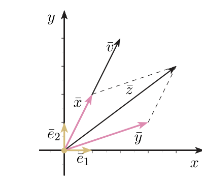
Figura 4.1 de U: vectores en $\mathbb R^2$ y suma por el paralelogramo. U p.144
Ejemplo 4.2 de U · $\mathbb R^3$
En $\mathbb R^3$, $\bar e_1=(1,0,0)$, $\bar e_2=(0,1,0)$, $\bar e_3=(0,0,1)$ apuntan en los ejes $x,y,z$ positivos. Para $\bar x=(1,2,1)$: $\|\bar x\|=\sqrt{1+4+1}=\sqrt6$. Distancia entre $(0,1,3)$ y $(1,2,1)$: $\sqrt{(0-1)^2+(1-2)^2+(3-1)^2}=\sqrt6$.
U pp.144-145
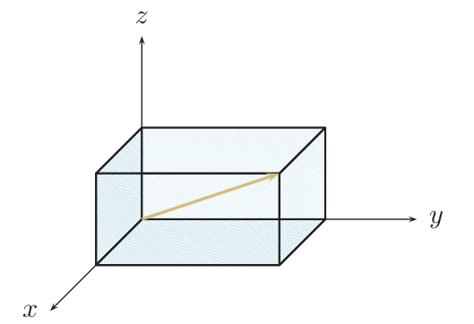
Figura 4.2 de U: el vector $(1,2,1)$ en $\mathbb R^3$ como diagonal de una caja de aristas $1,2,1$. U p.145
Error típico
Tratar $\bar x$ como un número: no se puede «dividir por un vector», ni escribir $\bar x>\bar y$ (no hay un orden natural en $\mathbb R^n$ como en $\mathbb R$). Solo se comparan números: normas, distancias, productos escalares.
2Producto escalar, norma, distancia y ángulo U pp.143-147
Lo que vas a aprender. a calcular un producto escalar, una norma, una distancia y un ángulo, y a decidir si dos vectores son ortogonales.
Cómo lo reconoces: «Calcula el producto escalar / la norma / la distancia», «halla el ángulo», «¿son ortogonales?».
Qué haces: Escribes la fórmula y sustituyes: multiplicar y sumar para el producto escalar; raíz de la suma de cuadrados para la norma; distancia = norma de la resta; coseno del ángulo con el cociente.
Ejemplo mínimo: $\bar u=(3,4)$, $\bar v=(4,-3)$: $\bar u\cdot\bar v=12-12=0$, luego son ortogonales; $\|\bar u\|=5$.
Idea intuitiva
En la recta, $|x|$ es la «longitud» de $x$ y $|x-y|$ la distancia entre $x$ e $y$. En $\mathbb R^n$ queremos lo mismo. El truco: el producto escalar multiplica «lo que un vector tiene de común con otro» y devuelve un número. Si lo calculas de un vector consigo mismo, obtienes el cuadrado de su longitud (Pitágoras generalizado). Y compara direcciones: es $0$ si son perpendiculares, positivo si apuntan «más o menos al mismo lado» y negativo si apuntan «a lados opuestos».
P
Definición 4.1 · producto escalar y norma
El producto escalar de $\bar x=(x_1,\dots,x_n)$ e $\bar y=(y_1,\dots,y_n)$ de $\mathbb R^n$ es el número
$$\bar x\cdot\bar y=x_1y_1+\dots+x_ny_n=\sum_{i=1}^nx_iy_i.$$
La norma (longitud) de $\bar x$ es $\|\bar x\|=\sqrt{\bar x\cdot\bar x}=\sqrt{x_1^2+\dots+x_n^2}$. Los vectores de norma $1$ se llaman unitarios.
Distancia entre $\bar x$ e $\bar y$: $d(\bar x,\bar y)=\|\bar y-\bar x\|=\sqrt{(y_1-x_1)^2+\dots+(y_n-x_n)^2}$.
U p.143
Truco de examen · mira el tipo de cada objeto
$\bar x\cdot\bar y$ es un número (multiplicar parejas y sumar; hacen falta dos vectores del mismo $\mathbb R^n$). $\lambda\bar x$ es un vector. Antes de operar, anota qué «tipo» sale en cada paso (Ejercicios 4.1 y 4.2).
Definición 4.2 · ángulo y ortogonalidad
El ángulo $\alpha$ que forman dos vectores no nulos $\bar x,\bar y$ cumple
$$\cos\alpha=\frac{\bar x\cdot\bar y}{\|\bar x\|\,\|\bar y\|},\qquad \alpha=\arccos\Big(\frac{\bar x\cdot\bar y}{\|\bar x\|\|\bar y\|}\Big)\in[0,\pi].$$
Dos vectores son ortogonales si y solo si su producto escalar es $0$. (Recuerda: por convención $\arccos x\in[0,\pi]$ para $x\in[-1,1]$.)
U p.147
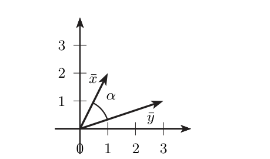
Figura 4.5 de U: el ángulo $\alpha$ entre dos vectores $\bar x$ e $\bar y$. U p.147
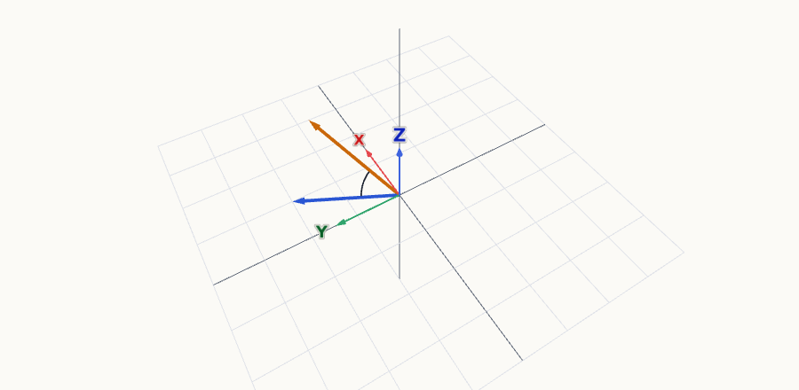
Interactivo propio. Arrastra para girar. Cambia las componentes de $u$ (naranja) y $v$ (azul) con los deslizadores: abajo salen $u\cdot v$, las normas, el ángulo $\alpha$ (arco negro) y la proyección de $u$ sobre $v$ (segmento verde, de longitud $\frac{u\cdot v}{\|v\|}$ con signo). Observa que $u\cdot v>0$ cuando el ángulo es agudo, $u\cdot v=0$ cuando es recto y $u\cdot v<0$ cuando es obtuso. Con $u=(2,1,1)$ y $v=(1,2,0)$: $u\cdot v=4$, $\alpha\approx43{,}1^\circ$. P
Propiedades que se dan por sabidas propia
Las operaciones de $\mathbb R^n$ y sus propiedades son conocidas del Álgebra (U p. 143). Estas tres se usan en los ejercicios:
Propiedades de la norma y del producto escalar
Homogeneidad. $\|\lambda\bar u\|=|\lambda|\,\|\bar u\|$. Ojo al valor absoluto: una norma nunca es negativa. (Razón: $\sqrt{\lambda^2u_1^2+\dots+\lambda^2u_n^2}=\sqrt{\lambda^2}\,\|\bar u\|$.)
Desigualdad triangular. $\|\bar u+\bar v\|\le\|\bar u\|+\|\bar v\|$. Dibuja $\bar u$, luego $\bar v$ a continuación: $\bar u+\bar v$ es el tercer lado del triángulo, y un lado nunca supera a la suma de los otros dos. Hay igualdad solo si $\bar u$ y $\bar v$ apuntan en el mismo sentido (o uno es nulo); en general es estricta. Es la versión vectorial de $|a+b|\le|a|+|b|$ (S App. A, p. A8). Útil después: $\|\bar q\|\ge\|\bar p\|-\|\bar p-\bar q\|$.
Cauchy-Schwarz. $|\bar u\cdot\bar v|\le\|\bar u\|\,\|\bar v\|$. Es lo que garantiza que el cociente de la Def. 4.2 está en $[-1,1]$ y, por tanto, que el $\arccos$ existe. No hace falta demostrarla para el examen.
P
3Discos y conjuntos abiertos y cerrados U pp.145-147
Lo que vas a aprender. a leer una desigualdad como un disco o una región, y a decidir su interior, su frontera, si es abierto, cerrado o acotado.
Cómo lo reconoces: «Describe el conjunto», «halla su frontera», «¿es abierto o cerrado?», con $<$ o $\le$ y distancias a un punto.
Qué haces: Lees la desigualdad como una distancia al centro, dibujas, marcas el borde y miras si el conjunto lo contiene ($\le$: sí; $<$: no).
Ejemplo mínimo: $x^2+y^2<4$: disco de centro $(0,0)$ y radio $2$; frontera, la circunferencia $x^2+y^2=4$; abierto, no cerrado y acotado.
Idea intuitiva · el borde de un charco
En la recta, el intervalo $(0,1)$ es «abierto» (sus extremos no le pertenecen) y $[0,1]$ «cerrado» (los contiene). En el plano, un conjunto es como un charco: el borde es la frontera. Si estás en un punto de dentro y puedes dar un pasito en cualquier dirección sin salirte, el punto es interior. Si, por pequeño que sea el pasito, hay direcciones que te sacan del charco y otras que te dejan dentro, estás en la frontera. Un charco es abierto si no incluye su borde, y cerrado si lo incluye. Estas ideas serán necesarias al estudiar extremos de funciones de varias variables.
P
Discos y puntos interiores
El disco abierto de centro $(a,b)$ y radio $r$ es $\{(x,y)\in\mathbb R^2: d((a,b),(x,y))<r\}$ (el círculo sin su circunferencia). El disco cerrado, con $\le$, la incluye. En $\mathbb R^3$ (y $\mathbb R^n$) se habla de bola abierta o cerrada, con las mismas definiciones.
Dado $C\subset\mathbb R^2$, $(a,b)$ es un punto interior de $C$ si existe un disco abierto de centro $(a,b)$ incluido en $C$.
U p.145
Un punto es exterior a $C$ si existe un disco abierto centrado en él sin ningún punto de $C$. Todo punto del plano es exactamente una de estas tres cosas respecto de $C$: interior, exterior o frontera. U (p. 142, objetivos) nombra «interior, exterior y frontera» pero no define «exterior»; esa definición es propia.
U p.142P
Frontera, abierto, cerrado, acotado
Punto frontera de $C$: aquel $(a,b)$ tal que todo disco abierto centrado en él tiene puntos de $C$ y puntos que no están en $C$. Su conjunto es la frontera de $C$.
Abierto: $C$ es vacío o todos sus puntos son interiores. $\mathbb R^2$ es abierto.
Cerrado: $C$ contiene a su frontera. Si no tiene puntos frontera (como $\mathbb R^2$), es cerrado.
Acotado: se puede incluir en un disco (su «extensión» es finita).
U p.146
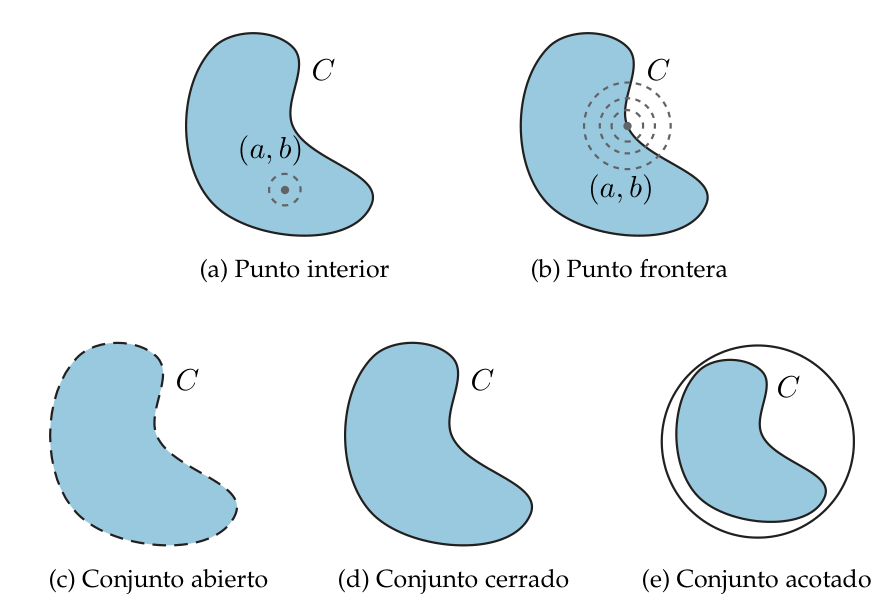
Figura 4.3 de U: punto interior y punto frontera (arriba); conjunto abierto, cerrado y acotado (abajo). U p.146
Ejemplo 4.3 de U · un disco abierto
$\{(x,y):(x-1)^2+(y+2)^2<9\}$ es el círculo de radio $3$ centrado en $(1,-2)$, sin la circunferencia. Su frontera es $\{(x-1)^2+(y+2)^2=9\}$; son frontera, por ejemplo, $(-2,-2)$, $(1,1)$ y $(2,2\sqrt2-2)$. El punto $(0,0)$ es interior (se puede rodear con un disco contenido). Todos sus puntos son interiores: el conjunto es abierto.
U pp.146-147
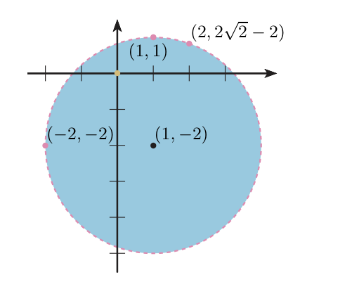
Figura 4.4 de U: el conjunto $\{(x-1)^2+(y+2)^2<9\}$, con borde punteado (no incluido). U p.147
Truco de examen · cómo leer una desigualdad
$(x-a)^2+(y-b)^2\ \square\ r^2$ significa «distancia al centro $(a,b)$ $\square$ $r$». Con «$<$» o «$>$»: sin borde (abierto). Con «$\le$» o «$\ge$»: con borde (cerrado). La frontera es siempre la igualdad.
Error típico
«Abierto» y «cerrado» no son contrarios: un conjunto puede ser ninguno de los dos (una corona con un borde dentro y otro fuera: ver Propio 2), y $\mathbb R^2$ y $\emptyset$ son ambos. Tampoco confundas frontera con «exterior»: la frontera es el borde, no «todo lo que no es $C$».
4Coordenadas polares, cilíndricas y esféricas U pp.148-152
Lo que vas a aprender. a pasar un punto de cartesianas a polares, cilíndricas o esféricas, y a volver, eligiendo bien el ángulo.
Cómo lo reconoces: «Expresa en polares / cilíndricas / esféricas», «pasa a cartesianas» o «describe las coordenadas polares».
Qué haces: Calculas $\rho$ con la raíz; eliges $\theta\in[0,2\pi)$ por el cuadrante; para volver, usas $x=\rho\cos\theta$, $y=\rho\operatorname{sen}\theta$ (y $z$).
Idea intuitiva · «cuánto a la derecha y arriba» frente a «a qué distancia y hacia dónde»
Las coordenadas cartesianas $(x,y)$ dicen cuánto avanzar en horizontal y en vertical. Las polares dicen: «mira en la dirección $\theta$ (un ángulo) y camina una distancia $\rho$». Son como el radar de un barco. Las cilíndricas añaden la altura $z$ (como un ascensor en un edificio redondo) y las esféricas dan, además de la distancia, la «longitud» $\theta$ y la «latitud» $\varphi$ (como en el globo terráqueo). Se usan porque ciertas curvas y superficies (círculos, cilindros, esferas) tienen ecuaciones mucho más simples.
P
Polares en $\mathbb R^2$ U pp.148-149
Coordenadas polares
Todo $(x,y)\in\mathbb R^2\setminus\{(0,0)\}$ queda determinado de forma única por un radio $\rho>0$ y un ángulo $\theta\in[0,2\pi)$: $\rho$ es la distancia al origen y $\theta$ el ángulo que forma $(x,y)$ con el semieje $x$ positivo, medido en sentido contrario a las agujas del reloj.
$$\begin{cases}x=\rho\cos\theta\\ y=\rho\operatorname{sen}\theta\end{cases}\ \longleftrightarrow\ \begin{cases}\rho=\sqrt{x^2+y^2}=\|(x,y)\|\\ \operatorname{tg}\theta=\dfrac yx\end{cases}$$
Para elegir $\theta$ hay que fijarse en los signos de $x$ e $y$. Si $x=0$: $\theta=\pi/2$ ($y>0$) o $\theta=3\pi/2$ ($y<0$).
U p.148
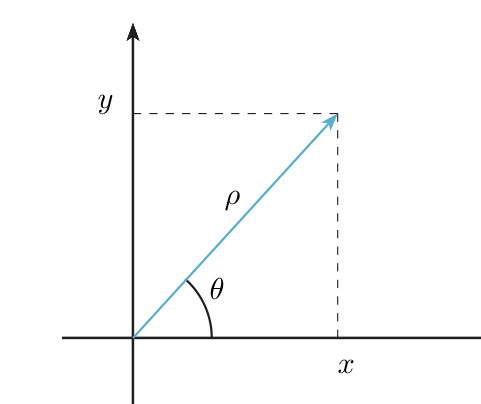
Figura 4.6 de U: coordenadas polares $(\rho,\theta)$. U p.148
La trampa del ángulo $\theta$
La calculadora da $\arctan(y/x)\in(-\pi/2,\pi/2)$, que solo es el $\theta$ correcto en el primer cuadrante. Los dos ángulos de $[0,2\pi)$ con la misma tangente están en cuadrantes opuestos (I y III, o II y IV). Regla segura con $\theta_0=\arctan|y/x|\in[0,\pi/2)$:
Elección de $\theta$ según el cuadrante
Signos
Cuadrante
$\theta$
$x>0,\ y\ge0$
I
$\theta_0$
$x<0,\ y\ge0$
II
$\pi-\theta_0$
$x<0,\ y<0$
III
$\pi+\theta_0$
$x>0,\ y<0$
IV
$2\pi-\theta_0$
$x=0$
eje $y$
$\pi/2$ si $y>0$; $3\pi/2$ si $y<0$
Siempre se puede comprobar sustituyendo: $\rho\cos\theta$ debe devolver $x$ y $\rho\operatorname{sen}\theta$ debe devolver $y$. La tabla es un resumen propio de la regla de U.
P
Ejemplos 4.4 y 4.5 de U
De cartesianas a polares: $(2,2\sqrt3)$. $\rho=\sqrt{4+12}=4$; $\operatorname{tg}\theta=\sqrt3$, y como $x,y>0$ (primer cuadrante) $\theta=\pi/3$. Polares: $(4,\pi/3)$.
De polares a cartesianas: $(\rho,\theta)=(2,7\pi/4)$. $x=2\cos\frac{7\pi}4=\sqrt2$, $y=2\operatorname{sen}\frac{7\pi}4=-\sqrt2$.
U p.149
Cilíndricas en $\mathbb R^3$ U pp.149-150
Coordenadas cilíndricas $(\rho,\theta,z)$
Son las polares de $(x,y)$ más la tercera coordenada sin cambiar:
$$x=\rho\cos\theta,\quad y=\rho\operatorname{sen}\theta,\quad z=z\ \ \longleftrightarrow\ \ \rho=\sqrt{x^2+y^2},\quad\operatorname{tg}\theta=\frac yx,\quad z=z.$$
Aquí $\rho$ es la distancia del punto al eje $z$ (no al origen). Muy convenientes para cilindros y superficies de revolución.
Con $\rho>0$, $\theta\in[0,2\pi)$ y $\varphi\in[-\pi/2,\pi/2]$. $\rho$ es la distancia al origen; $\theta$ es el ángulo de la proyección sobre el plano $xy$ con el semieje $x$ positivo (la «longitud»); $\varphi$ es el ángulo que forma $(x,y,z)$ con su proyección sobre el plano $xy$ (la «latitud»: positivo hacia arriba).
$$\begin{cases}x=\rho\cos\varphi\cos\theta\\ y=\rho\cos\varphi\operatorname{sen}\theta\\ z=\rho\operatorname{sen}\varphi\end{cases}\longleftrightarrow\ \begin{cases}\rho=\sqrt{x^2+y^2+z^2}\\ \operatorname{tg}\theta=y/x\\ \operatorname{sen}\varphi=\dfrac z{\sqrt{x^2+y^2+z^2}}\end{cases}$$
$\theta$ se calcula como en cilíndricas. Como $\varphi\in[-\pi/2,\pi/2]$, queda determinado de forma única por $\operatorname{sen}\varphi=z/\rho$ (en ese intervalo el seno toma cada valor una sola vez); su signo es el de $z$.
U pp.150-151
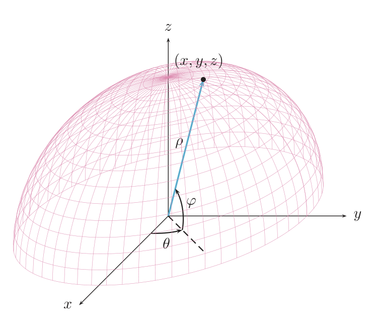
Figura 4.8 de U: coordenadas esféricas; $\varphi$ se mide desde el plano $xy$. U p.151
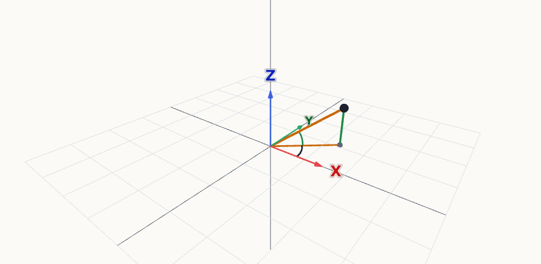
Interactivo propio. Arrastra para girar. Elige el sistema y mueve $\rho$, $\theta$ y ($z$ o $\varphi$): se ve el punto, su proyección sobre el plano $xy$, el arco de $\theta$ (negro) y, en esféricas, el arco de $\varphi$ (verde), que se mide desde el plano $xy$ como en U. Abajo salen $(x,y,z)$ y las fórmulas. Comprueba el Ejemplo 4.8: $\rho=1$, $\theta=225^\circ$, $\varphi=30^\circ$ da $x=y=-\frac{\sqrt6}4\approx-0{,}612$ y $z=\frac12$. P
Ejemplos 4.7 y 4.8 de U
Ej. 4.7. Punto $(3,-4,-1)$. Cilíndricas: $\rho=\sqrt{9+16}=5$, $z=-1$, $\operatorname{tg}\theta=-4/3$ con $x>0$, $y<0$ (cuarto cuadrante, fila IV de la tabla): $\theta_0=\arctan\frac43\approx0{,}9273$ y $\theta=2\pi-\theta_0\approx5{,}3559$ rad. Esféricas: $\rho=\sqrt{26}$ (es otra $\rho$), el mismo $\theta$ y $\varphi=\operatorname{arcsen}(-1/\sqrt{26})\approx-0{,}1974$ rad.
Otra convención de $\varphi$. Muchos libros miden el ángulo esférico desde el eje $z$ ($z=\rho\cos\varphi$, $\varphi\in[0,\pi]$). En U, $\varphi$ se mide desde el plano $xy$ y $z=\rho\operatorname{sen}\varphi$. En el examen manda U.
Dos $\rho$ distintas. En cilíndricas $\rho=\sqrt{x^2+y^2}$; en esféricas $\rho=\sqrt{x^2+y^2+z^2}$.
La unicidad solo se tiene fuera del eje $z$ (no afecta a los ejercicios).
P
5Mapa de decisión: qué hago según lo que me piden P
Lo que vas a aprender. qué hacer según lo que te pidan (operación con vectores, conjunto del plano, cambio de coordenadas) con un mapa de decisión y, desplegable, una tabla con el detalle de cada caso.
Léelo de arriba abajo: en cada pregunta, «no» baja a la siguiente y «sí» te lleva a la acción de la derecha. Casi todo en este tema son cuentas cortas; lo que más puntos se pierde es no sumar en el producto escalar, un signo al restar y el cuadrante de $\theta$.
No es una igualdad (solo si apuntan en el mismo sentido)
Frontera, abierto, cerrado de un conjunto del plano
Dibujo; interior = hay un disco dentro; frontera = todo disco tiene puntos de dentro y de fuera
«No abierto» no es «cerrado»; la frontera no es el exterior
Cartesianas $\to$ polares
$\rho=\sqrt{x^2+y^2}$; $\theta\in[0,2\pi)$ por el cuadrante
$\arctan(y/x)$ sin mirar el cuadrante; $x=0$
Cilíndricas y esféricas
Cilíndricas: polares y $z$. Esféricas: $z=\rho\operatorname{sen}\varphi$
Dos $\rho$ distintas; $\varphi$ se mide desde el plano $xy$ (U)
Método en cinco pasos para el examen
Traduce lo que piden a una fila del mapa (operación, conjunto o coordenadas).
Escribe la fórmula con letras antes de sustituir (así se ve qué falta).
Sustituye con paréntesis, sobre todo con números negativos: $3-(-1)=4$.
Simplifica ($\sqrt{27}=3\sqrt3$) y deja la respuesta exacta; da un decimal solo si lo piden.
Comprueba: signo del producto escalar frente al ángulo, cuadrante de $\theta$, vuelta a cartesianas.
P
6Practica P
Lo que vas a aprender. a resolver tú solo un ejemplo de cada tipo. Intenta cada uno antes de abrir la pista; empieza por los ★ (los ★★ son ampliación).
Ahora hazlo tú
Todo sale de dos cuentas: el producto escalar (multiplicar y sumar) y la norma (raíz de la suma de cuadrados); distancia y ángulo se construyen con ellas. En conjuntos, lee cada desigualdad como una distancia y mira qué bordes entran. En coordenadas, calcula $\rho$, elige $\theta$ por el cuadrante y comprueba volviendo a cartesianas.
Producto escalar, norma y distancia
★ Básico Práctica a1 · producto escalar, normas y distancia en $\mathbb R^3$ P
Dados $\bar u=(2,-1,3)$ y $\bar v=(1,4,-2)$, calcula $\bar u\cdot\bar v$, $\|\bar u\|$, $\|\bar v\|$ y la distancia $d(\bar u,\bar v)$.
Pista
Producto escalar: multiplica componente a componente y suma. Norma: raíz de la suma de cuadrados. Distancia: norma de la resta $\bar v-\bar u$.
Ver solución
Producto escalar (Def. 4.1, U p.143): $\bar u\cdot\bar v=2\cdot1+(-1)\cdot4+3\cdot(-2)=2-4-6=-8$. Es un número (y puede ser negativo).
Normas (Def. 4.1, U p.143): $\|\bar u\|=\sqrt{4+1+9}=\sqrt{14}\approx3{,}74$; $\|\bar v\|=\sqrt{1+16+4}=\sqrt{21}\approx4{,}58$.
★★ Medio Práctica a2 · puntos del eje $x$ a distancia $3$ de $(1,2,2)$ P
Halla todos los puntos del eje $x$ de $\mathbb R^3$ que están a distancia $3$ del punto $(1,2,2)$.
Pista
Un punto del eje $x$ es de la forma $(x,0,0)$. Escribe la condición $d=3$ y eleva al cuadrado para quitar la raíz.
Ver solución
Incógnita: los puntos del eje $x$ tienen $y=z=0$: son $(x,0,0)$ con $x\in\mathbb R$.
Condición (distancia, U p.143): $d\big((x,0,0),(1,2,2)\big)=\sqrt{(x-1)^2+(0-2)^2+(0-2)^2}=3$.
Quitar la raíz: los dos lados son $\ge0$, así que elevar al cuadrado no añade soluciones: $(x-1)^2+4+4=9$, es decir $(x-1)^2=1$.
Resolver: $x-1=1$ o $x-1=-1$: $x=2$ o $x=0$.
Comprobar: $d\big((0,0,0),(1,2,2)\big)=\sqrt{1+4+4}=3$ ✓ y $d\big((2,0,0),(1,2,2)\big)=\sqrt{1+4+4}=3$ ✓. Geométricamente: la esfera de centro $(1,2,2)$ y radio $3$ corta al eje $x$ en dos puntos.
Resultado: $(0,0,0)$ y $(2,0,0)$
Ángulo y ortogonalidad
★ Básico Práctica b1 · ángulo entre $(1,0,1)$ y $(0,1,1)$ P
Calcula el ángulo que forman $\bar u=(1,0,1)$ y $\bar v=(0,1,1)$.
Pista
$\cos\alpha=\dfrac{\bar u\cdot\bar v}{\|\bar u\|\|\bar v\|}$ y $\alpha=\arccos(\dots)\in[0,\pi]$. Te saldrá un coseno conocido.
Ver solución
Producto escalar (Def. 4.1, U p.143): $\bar u\cdot\bar v=1\cdot0+0\cdot1+1\cdot1=1$.
Normas: $\|\bar u\|=\sqrt{1+0+1}=\sqrt2$ y $\|\bar v\|=\sqrt2$.
Coseno (Def. 4.2, U p.147): $\cos\alpha=\dfrac{1}{\sqrt2\cdot\sqrt2}=\dfrac12$.
Ángulo: el $\arccos$ da un único valor en $[0,\pi]$ (U p.147, nota al margen): $\alpha=\arccos\frac12=\frac\pi3$, agudo, como anunciaba $\bar u\cdot\bar v>0$.
★★ Medio Práctica b2 · un parámetro para la ortogonalidad y un ángulo obtuso P
Sean $\bar u=(k,2,-1)$ y $\bar v=(3,k,4)$. a) Halla $k$ para que sean ortogonales. b) Para $k=0$, calcula el ángulo que forman.
Pista
a) Ortogonales $\iff\bar u\cdot\bar v=0$: sale una ecuación en $k$. b) Sustituye $k=0$ y usa la fórmula del coseno; el signo del producto escalar te dice si el ángulo es agudo u obtuso.
Ver solución
a) Producto escalar con $k$ (Def. 4.1, U p.143): $\bar u\cdot\bar v=3k+2k+(-1)\cdot4=5k-4$.
Ortogonalidad (Def. 4.2, U p.147): $5k-4=0\iff k=\frac45$. Comprobación: $(\frac45,2,-1)\cdot(3,\frac45,4)=\frac{12}5+\frac85-4=0$ ✓.
b) Con $k=0$: $\bar u=(0,2,-1)$, $\bar v=(3,0,4)$; $\bar u\cdot\bar v=0+0-4=-4$; $\|\bar u\|=\sqrt5$, $\|\bar v\|=\sqrt{9+16}=5$.
Coseno (Def. 4.2, U p.147): $\cos\alpha=\dfrac{-4}{5\sqrt5}\approx-0{,}358$.
Ángulo: $\alpha=\arccos\big(-\frac4{5\sqrt5}\big)\approx1{,}937$ rad $\approx110{,}96^\circ$. Es obtuso porque el coseno es negativo (producto escalar negativo); el $\arccos$ ya devuelve el valor correcto en $[0,\pi]$, no hay que corregir nada.
Resultado: $k=\frac45$; con $k=0$, $\cos\alpha=-\frac4{5\sqrt5}$ y $\alpha\approx1{,}937$ rad (obtuso)
Vectores unitarios y propiedades de la norma
★ Básico Práctica c1 · normalizar y cambiar de longitud P
Sea $\bar w=(3,-4,12)$. a) Halla el vector unitario con la misma dirección y sentido que $\bar w$. b) Halla el vector de norma $5$ con la misma dirección que $\bar w$ y sentido contrario.
Pista
Dividir un vector (no nulo) entre su norma lo deja de longitud $1$ sin cambiar su dirección ni su sentido. Después, multiplica por el número adecuado: $\|\lambda\bar x\|=|\lambda|\,\|\bar x\|$ y un $\lambda$ negativo da la vuelta al sentido.
Ver solución
Norma (Def. 4.1, U p.143): $\|\bar w\|=\sqrt{9+16+144}=\sqrt{169}=13$.
a) Unitario: $\dfrac{\bar w}{\|\bar w\|}=\frac1{13}(3,-4,12)=\left(\frac3{13},-\frac4{13},\frac{12}{13}\right)$. Por la homogeneidad, su norma es $\frac1{13}\cdot13=1$ ✓ (unitario, U p.143). Mismo sentido porque $\frac1{13}>0$.
b) Cambiar longitud y sentido: multiplicamos el unitario por $\lambda=-5$: la norma pasa a ser $|-5|\cdot1=5$ y el signo negativo invierte el sentido.
Resultado: unitario $\frac1{13}(3,-4,12)$; de norma $5$ y sentido contrario $\left(-\frac{15}{13},\frac{20}{13},-\frac{60}{13}\right)$
★★ Medio Práctica c2 · $\|\bar u\pm\bar v\|$ sin conocer los vectores P
De dos vectores $\bar u,\bar v\in\mathbb R^n$ solo se sabe que $\|\bar u\|=3$, $\|\bar v\|=5$ y $\bar u\cdot\bar v=-2$. Calcula $\|\bar u+\bar v\|$ y $\|\bar u-\bar v\|$ y comprueba la desigualdad triangular. Compruébalo después con $\bar u=(1,2,-2)$ y $\bar v=(4,0,3)$.
Pista
Usa que $\|\bar x\|^2=\bar x\cdot\bar x$ con $\bar x=\bar u+\bar v$ y desarrolla como un cuadrado: $(a+b)^2=a^2+2ab+b^2$, ahora con productos escalares.
Ver solución
Idea: la norma al cuadrado es un producto escalar (Def. 4.1, U p.143): $\|\bar u+\bar v\|^2=(\bar u+\bar v)\cdot(\bar u+\bar v)$.
Desarrollar (por qué vale: en cada componente $(u_i+v_i)^2=u_i^2+2u_iv_i+v_i^2$; sumando en $i$): $\|\bar u+\bar v\|^2=\|\bar u\|^2+2\,\bar u\cdot\bar v+\|\bar v\|^2$. Igual, con $(u_i-v_i)^2$: $\|\bar u-\bar v\|^2=\|\bar u\|^2-2\,\bar u\cdot\bar v+\|\bar v\|^2$.
Sustituir: $\|\bar u+\bar v\|^2=9+2(-2)+25=30$, así que $\|\bar u+\bar v\|=\sqrt{30}\approx5{,}48$; $\|\bar u-\bar v\|^2=9+4+25=38$, así que $\|\bar u-\bar v\|=\sqrt{38}\approx6{,}16$.
Triangular: $\|\bar u\|+\|\bar v\|=8$ y las dos normas son menores que $8$ (para la resta: $\|\bar u+(-\bar v)\|\le\|\bar u\|+\|-\bar v\|=3+5$). Estricta porque $\bar u$ y $\bar v$ no apuntan en el mismo sentido.
Con los vectores dados: $\|(1,2,-2)\|=3$, $\|(4,0,3)\|=5$, $(1,2,-2)\cdot(4,0,3)=4+0-6=-2$ ✓; $\bar u+\bar v=(5,2,1)$, norma $\sqrt{30}$ ✓; $\bar u-\bar v=(-3,2,-5)$, norma $\sqrt{38}$ ✓.
Resultado: $\|\bar u+\bar v\|=\sqrt{30}\approx5{,}48$ y $\|\bar u-\bar v\|=\sqrt{38}\approx6{,}16$, los dos $\le8$
Conjuntos del plano: interior, frontera, abierto, cerrado, acotado
★ Básico Práctica d1 · el exterior de un disco P
Sea $C=\{(x,y)\in\mathbb R^2:(x+1)^2+(y-2)^2\ge4\}$. Descríbelo, halla su frontera, clasifica los puntos $(-1,2)$, $(1,2)$, $(2,2)$ y $(-1,4)$ (interior, frontera o exterior) y decide si $C$ es abierto, cerrado y acotado.
Pista
$(x+1)^2+(y-2)^2$ es el cuadrado de la distancia de $(x,y)$ a $(-1,2)$. «$\ge4$» significa «a distancia $\ge2$ del centro»: es lo de fuera del disco, borde incluido.
Ver solución
Leer la desigualdad (distancia, U p.143): $(x+1)^2+(y-2)^2=d\big((x,y),(-1,2)\big)^2$, luego $C$ son los puntos a distancia $\ge2$ de $(-1,2)$: todo el plano menos el disco abierto de centro $(-1,2)$ y radio $2$.
Frontera (U p.146): la igualdad, la circunferencia $(x+1)^2+(y-2)^2=4$. En cada punto de ella, cualquier disco pequeño tiene puntos de dentro del círculo (que no son de $C$) y de fuera (que sí lo son).
Puntos: $(-1,2)$ es el centro, distancia $0<2$: exterior a $C$ (el disco de radio $1$ a su alrededor no toca $C$). $(1,2)$: distancia $2$, frontera. $(2,2)$: distancia $3>2$, interior (el disco de radio $1$ centrado en él queda a distancia $>2$ del centro, por la desigualdad triangular). $(-1,4)$: distancia $2$, frontera.
Cerrado (U p.146): sí, porque la frontera cumple $=4\ge4$ y está toda en $C$.
Abierto: no; $(1,2)\in C$ es frontera, no interior. Acotado: no; contiene los puntos $(n,2)$ con $n$ tan grande como se quiera, y no cabe en ningún disco.
Resultado: cerrado, no abierto y no acotado; frontera: la circunferencia $(x+1)^2+(y-2)^2=4$
★★ Medio Práctica d2 · un cuarto de disco con bordes mezclados P
Sea $A=\{(x,y)\in\mathbb R^2:\ x>0,\ y\ge0,\ x^2+y^2<4\}$. Dibújalo, halla su frontera y decide si es abierto, cerrado y acotado.
Pista
Es un cuarto del disco de radio $2$ (primer cuadrante). Tiene tres bordes: un arco y dos segmentos sobre los ejes. Mira cuáles cumplen las condiciones (con $<$ o $\le$) y cuáles no.
Ver solución
Dibujo: $x^2+y^2<4$ es el disco abierto de radio $2$ (U p.145); $x>0$, $y\ge0$ lo reduce al primer cuadrante. Bordes: el arco $x^2+y^2=4$ (no incluido, por el «$<$»), el segmento del eje $y$ con $0\le y\le2$ (no incluido, por el «$x>0$») y el segmento del eje $x$ con $0\le x\le2$ (incluido solo en $0<x<2$, por el «$y\ge0$»).
Frontera (U p.146): la unión de los tres bordes, $\{x^2+y^2=4,\ x\ge0,\ y\ge0\}\cup\{(x,0):0\le x\le2\}\cup\{(0,y):0\le y\le2\}$. Un punto como $(1,1)$ no es frontera: el disco de radio $0{,}1$ a su alrededor queda dentro de $A$ (interior).
¿Abierto? No: $(1,0)\in A$ ($1>0$, $0\ge0$, $1<4$), pero todo disco centrado en él contiene puntos con $y<0$, que no son de $A$. Es un punto de $A$ que no es interior.
¿Cerrado? No: $(0,1)$ es frontera (todo disco a su alrededor tiene puntos con $x>0$ de $A$ y puntos con $x<0$) y no está en $A$ (falla $x>0$). $A$ no contiene toda su frontera.
¿Acotado? Sí: cabe en el disco de centro $(0,0)$ y radio $2$.
Resultado: ni abierto ni cerrado; acotado
Coordenadas polares
★ Básico Práctica e1 · a polares en los cuadrantes II y IV P
Expresa en coordenadas polares los puntos $(-2,2)$ y $(\sqrt3,-1)$.
Pista
$\rho=\sqrt{x^2+y^2}$. Para $\theta$, calcula $\theta_0=\arctan|y/x|$ y colócalo en el cuadrante que dicen los signos de $x$ e $y$.
Ver solución
$(-2,2)$, radio (polares, U p.148): $\rho=\sqrt{4+4}=2\sqrt2$.
Ángulo: $\operatorname{tg}\theta=\frac{2}{-2}=-1$, $\theta_0=\frac\pi4$; $x<0$, $y>0$: segundo cuadrante, $\theta=\pi-\frac\pi4=\frac{3\pi}4$. (La calculadora diría $-\frac\pi4$, que está en el cuarto cuadrante: incorrecto.) Comprobación: $2\sqrt2\cos\frac{3\pi}4=-2$, $2\sqrt2\operatorname{sen}\frac{3\pi}4=2$ ✓.
$(\sqrt3,-1)$, radio: $\rho=\sqrt{3+1}=2$.
Ángulo: $\operatorname{tg}\theta=-\frac1{\sqrt3}$, $\theta_0=\frac\pi6$; $x>0$, $y<0$: cuarto cuadrante, $\theta=2\pi-\frac\pi6=\frac{11\pi}6$ (U pide $\theta\in[0,2\pi)$, no $-\frac\pi6$). Comprobación: $2\cos\frac{11\pi}6=\sqrt3$, $2\operatorname{sen}\frac{11\pi}6=-1$ ✓.
★★ Medio Práctica e2 · la circunferencia $x^2+y^2=4x$ en polares P
a) Escribe en coordenadas polares la curva $x^2+y^2=4x$ y di qué curva es. b) ¿Está en ella el punto $(2,2)$? ¿Y el punto de coordenadas polares $(\rho,\theta)=\left(2\sqrt3,\frac{7\pi}6\right)$?
Pista
Sustituye $x=\rho\cos\theta$, $y=\rho\operatorname{sen}\theta$ y usa $\cos^2\theta+\operatorname{sen}^2\theta=1$. Para reconocer la curva en cartesianas, completa el cuadrado en $x$.
Ver solución
Sustituir (polares, U p.148): $x^2+y^2=\rho^2(\cos^2\theta+\operatorname{sen}^2\theta)=\rho^2$ y $4x=4\rho\cos\theta$. La ecuación queda $\rho^2=4\rho\cos\theta$.
Simplificar: en polares $\rho>0$ (U p.148), así que se puede dividir entre $\rho$: $\rho=4\cos\theta$. Como $\rho>0$, solo valen los $\theta$ con $\cos\theta>0$: $\theta\in[0,\frac\pi2)\cup(\frac{3\pi}2,2\pi)$. (El origen, que también cumple $x^2+y^2=4x$, no tiene polares.)
Qué curva es: $x^2-4x+y^2=0\iff(x-2)^2+y^2=4$: circunferencia de centro $(2,0)$ y radio $2$ (distancia a $(2,0)$ igual a $2$, U p.143).
$(2,2)$: en cartesianas, $4+4=8=4\cdot2$ ✓. En polares: $\rho=2\sqrt2$, $\theta=\frac\pi4$ y $4\cos\frac\pi4=2\sqrt2=\rho$ ✓.
$\left(2\sqrt3,\frac{7\pi}6\right)$: $\cos\frac{7\pi}6=-\frac{\sqrt3}2<0$, así que $4\cos\theta<0\ne\rho$: no está. En cartesianas: $x=2\sqrt3\cdot(-\frac{\sqrt3}2)=-3$, $y=2\sqrt3\cdot(-\frac12)=-\sqrt3$ y $x^2+y^2=12\ne-12=4x$ ✓.
Resultado: $\rho=4\cos\theta$, circunferencia de centro $(2,0)$ y radio $2$; $(2,2)$ está en ella y $(-3,-\sqrt3)$ no
Coordenadas cilíndricas
★ Básico Práctica f1 · ida y vuelta en cilíndricas P
a) Halla las coordenadas cilíndricas del punto $(-1,-1,3)$. b) Halla las cartesianas del punto de cilíndricas $(\rho,\theta,z)=\left(4,\frac{5\pi}6,-2\right)$.
Pista
Cilíndricas = polares de $(x,y)$ + la misma $z$. a) Ojo al cuadrante de $(-1,-1)$. b) Sustituye en $x=\rho\cos\theta$, $y=\rho\operatorname{sen}\theta$, $z=z$.
Ver solución
a) Radio (cilíndricas, U p.149): $\rho=\sqrt{x^2+y^2}=\sqrt{1+1}=\sqrt2$ (distancia al eje $z$; la $z$ no entra).
Ángulo: $\operatorname{tg}\theta=\frac{-1}{-1}=1$, $\theta_0=\frac\pi4$; $x<0$, $y<0$: tercer cuadrante, $\theta=\pi+\frac\pi4=\frac{5\pi}4$ (no $\frac\pi4$, que es el primer cuadrante).
★★ Medio Práctica f2 · cono, paraboloide y medio cilindro en cilíndricas P
a) Escribe en coordenadas cilíndricas el cono $z=\sqrt{x^2+y^2}$ y el paraboloide $z=x^2+y^2$. b) Describe en cilíndricas el sólido $S=\{(x,y,z):\ x^2+y^2\le4,\ y\ge0,\ 0\le z\le3\}$.
Pista
Lo único que hay que saber es que $x^2+y^2=\rho^2$. Para el sólido: cada condición en $x,y$ se traduce en una condición sobre $\rho$ o sobre $\theta$; la de $z$ no cambia.
Ver solución
Clave (cilíndricas, U p.149): $x^2+y^2=\rho^2\cos^2\theta+\rho^2\operatorname{sen}^2\theta=\rho^2$.
Cono: $z=\sqrt{\rho^2}=\rho$ (porque $\rho\ge0$). La altura es igual a la distancia al eje $z$: un cono con vértice en el origen.
Paraboloide: $z=\rho^2$. Ninguna de las dos depende de $\theta$: son superficies de revolución alrededor del eje $z$ (para eso son cómodas las cilíndricas, U p.149).
Sólido, condición en $\rho$: $x^2+y^2\le4\iff\rho^2\le4\iff0\le\rho\le2$ (los puntos del eje $z$, con $\rho=0$, también están; ahí $\theta$ puede ser cualquiera).
Condición en $\theta$: $y=\rho\operatorname{sen}\theta\ge0$ con $\rho>0$ $\iff\operatorname{sen}\theta\ge0\iff\theta\in[0,\pi]$ (semiplano superior). Ejemplos: $(0,1,2)\to(1,\frac\pi2,2)$ y $(-1,0,1)$ tiene $\theta=\pi$.
Condición en $z$: igual, $0\le z\le3$. $S$ es medio cilindro macizo de radio $2$ y altura $3$.
★ Básico Práctica g1 · ida y vuelta en esféricas ($\varphi$ negativo) P
a) Halla las coordenadas esféricas del punto $(0,2,-2)$. b) Halla las cartesianas del punto de esféricas $(\rho,\theta,\varphi)=\left(2,\pi,\frac\pi3\right)$.
Pista
Aquí $\rho=\sqrt{x^2+y^2+z^2}$ (distancia al origen). Con $x=0$ no se divide: mira el signo de $y$. Y $\operatorname{sen}\varphi=z/\rho$ con $\varphi\in[-\frac\pi2,\frac\pi2]$: si $z<0$, $\varphi<0$.
Ver solución
a) Radio (esféricas, U pp.150-151): $\rho=\sqrt{0+4+4}=2\sqrt2$.
Longitud $\theta$: $x=0$ e $y=2>0$: el punto se proyecta sobre el semieje $y$ positivo, $\theta=\frac\pi2$ (regla de U p.148).
Latitud $\varphi$: $\operatorname{sen}\varphi=\frac{z}{\rho}=\frac{-2}{2\sqrt2}=-\frac{\sqrt2}2$; en $[-\frac\pi2,\frac\pi2]$ el seno toma ese valor una sola vez: $\varphi=-\frac\pi4$ (negativo: el punto está por debajo del plano $xy$).
b) Sustituir (U p.150): $x=2\cos\frac\pi3\cos\pi=2\cdot\frac12\cdot(-1)=-1$; $y=2\cos\frac\pi3\operatorname{sen}\pi=0$; $z=2\operatorname{sen}\frac\pi3=\sqrt3$.
★★ Medio Práctica g2 · cilíndricas, esféricas y la esfera $x^2+y^2+z^2=2z$ P
a) Halla las coordenadas cilíndricas y esféricas del punto $(-1,\sqrt3,2)$ y comprueba el resultado volviendo a cartesianas. b) Escribe en esféricas la superficie $x^2+y^2+z^2=2z$ y di qué superficie es.
Pista
a) $\theta$ es el mismo en cilíndricas y en esféricas; las dos $\rho$ son distintas. b) $x^2+y^2+z^2=\rho^2$ y $z=\rho\operatorname{sen}\varphi$; para reconocerla, completa el cuadrado en $z$.
Ver solución
Cilíndricas (U p.149): $\rho=\sqrt{1+3}=2$; $\operatorname{tg}\theta=\frac{\sqrt3}{-1}=-\sqrt3$, $\theta_0=\frac\pi3$, con $x<0$, $y>0$ (segundo cuadrante): $\theta=\pi-\frac\pi3=\frac{2\pi}3$; $z=2$.
Esféricas (U pp.150-151): $\rho=\sqrt{1+3+4}=2\sqrt2$ (otra $\rho$: distancia al origen); el mismo $\theta=\frac{2\pi}3$; $\operatorname{sen}\varphi=\frac2{2\sqrt2}=\frac{\sqrt2}2$, luego $\varphi=\frac\pi4$.
Vuelta: $x=2\sqrt2\cdot\frac{\sqrt2}2\cdot\cos\frac{2\pi}3=2\cdot(-\frac12)=-1$; $y=2\cdot\operatorname{sen}\frac{2\pi}3=\sqrt3$; $z=2\sqrt2\cdot\frac{\sqrt2}2=2$ ✓. (Fíjate en que $\rho_{\rm esf}\cos\varphi=2=\rho_{\rm cil}$.)
b) Sustituir: $x^2+y^2+z^2=\rho^2\cos^2\varphi(\cos^2\theta+\operatorname{sen}^2\theta)+\rho^2\operatorname{sen}^2\varphi=\rho^2$, y $2z=2\rho\operatorname{sen}\varphi$. Queda $\rho^2=2\rho\operatorname{sen}\varphi$ y, dividiendo entre $\rho>0$, $\rho=2\operatorname{sen}\varphi$ (solo con $\varphi\in(0,\frac\pi2]$: los puntos de la superficie, salvo el origen, están por encima del plano $xy$).
Qué superficie es: $x^2+y^2+z^2-2z=0\iff x^2+y^2+(z-1)^2=1$: la esfera de centro $(0,0,1)$ y radio $1$, que toca el plano $xy$ en el origen.
Resultado: cilíndricas $\left(2,\frac{2\pi}3,2\right)$; esféricas $\left(2\sqrt2,\frac{2\pi}3,\frac\pi4\right)$; la esfera es $\rho=2\operatorname{sen}\varphi$
7Errores típicos y autoevaluación P
Lo que vas a aprender. a detectar tus fallos antes del examen: 10 preguntas rápidas; cada una es un error típico, con su explicación al responder.
1. (V/F) El producto escalar de dos vectores de $\mathbb R^3$ es otro vector de $\mathbb R^3$.
Es un número: $\bar x\cdot\bar y=x_1y_1+x_2y_2+x_3y_3$ (Def. 4.1, U p.143). Por eso no existe «el producto escalar de tres vectores» (E 4.1).
2. (Elige) La norma de $(-3,0,4)$ es:
$\sqrt{9+0+16}=\sqrt{25}=5$ (U p.143). (a) suma las componentes con signo, (c) suma sus valores absolutos y (d) olvida la raíz.
3. (V/F) Para todo vector $\bar u$, $\|-2\bar u\|=-2\|\bar u\|$.
Una norma nunca es negativa: $\|\lambda\bar u\|=|\lambda|\,\|\bar u\|$, así que $\|-2\bar u\|=2\|\bar u\|$. Solo coinciden si $\bar u=\bar 0$.
4. (Elige) Si $\bar u,\bar v$ son no nulos y $\bar u\cdot\bar v<0$, el ángulo que forman es:
$\cos\alpha=\frac{\bar u\cdot\bar v}{\|\bar u\|\|\bar v\|}$ tiene el signo del producto escalar, porque las normas son positivas (Def. 4.2, U p.147). Coseno negativo con $\alpha\in[0,\pi]$: $\alpha\in(\frac\pi2,\pi]$.
5. (V/F) Para cualesquiera $\bar u,\bar v$ se cumple $\|\bar u+\bar v\|=\|\bar u\|+\|\bar v\|$.
La desigualdad triangular es «$\le$», y en general estricta: con $(-1,1)$ y $(2,3)$, $\sqrt{17}<\sqrt2+\sqrt{13}$ (E 4.4). Solo hay igualdad si apuntan en el mismo sentido (o uno es nulo).
6. (Elige) El conjunto $\{(x,y):1\le x^2+y^2<4\}$ es:
Contiene la circunferencia interior (puntos frontera que no son interiores: no es abierto) y le falta la exterior (frontera que no contiene: no es cerrado). U p.146. Abierto y cerrado no son contrarios.
7. (V/F) La frontera de $\{(x,y):x^2+y^2<9\}$ es el disco $\{(x,y):x^2+y^2\le9\}$.
La frontera es solo el borde, la circunferencia $x^2+y^2=9$ (U p.146; Ejemplo 4.3, U p.147). Los puntos con $x^2+y^2<9$ son interiores.
8. (Elige) El ángulo polar $\theta\in[0,2\pi)$ del punto $(-1,-1)$ es:
$\operatorname{tg}\theta=1$ lo cumplen $\frac\pi4$ (I) y $\frac{5\pi}4$ (III). Con $x<0$, $y<0$ es el tercer cuadrante: $\frac{5\pi}4$ (U p.148). La calculadora daría (a).
9. (V/F) La coordenada $\rho$ de un punto es la misma en cilíndricas que en esféricas.
En cilíndricas $\rho=\sqrt{x^2+y^2}$ (distancia al eje $z$, U p.149); en esféricas $\rho=\sqrt{x^2+y^2+z^2}$ (distancia al origen, U p.150). Solo coinciden si $z=0$. Lo que sí es igual es $\theta$.
10. (Elige) Un punto tiene coordenadas esféricas $(\rho,\theta,\varphi)$ con $\varphi=-\frac\pi6$. Ese punto está:
Con el convenio de U, $z=\rho\operatorname{sen}\varphi$ y $\varphi\in[-\frac\pi2,\frac\pi2]$ (U pp.150-151): $z=\rho\operatorname{sen}(-\frac\pi6)=-\frac\rho2<0$.
8Ejercicios del libro, resueltos E pp.136-141
Se mantiene la numeración de E, agrupada en bloques según lo que enseñan: A (producto escalar, normas, ortogonalidad), B (conjuntos del plano) y C (cambios de coordenadas). Cada ejercicio muestra el enunciado, «Antes de calcular» y la receta; la resolución paso a paso está desplegable. Orden recomendado, de fácil a difícil: 4.1 → 4.2 → 4.3 → 4.4 → 4.6 → 4.7 → 4.8 → 4.5 (el 4.5, de conjuntos, es el más conceptual). Los ejercicios 4.9 y siguientes (E p. 142 en adelante) son de 4.2 y se verán allí.
Bloque A · Producto escalar, norma y ortogonalidad
★ BásicoEjercicio 4.1 · ¿se pueden multiplicar escalarmente tres vectores? ¿Y uno de $\mathbb R^2$ con uno de $\mathbb R^3$?E p.136
¿Se pueden multiplicar escalarmente tres vectores? ¿Y un vector de $\mathbb R^2$ con uno de $\mathbb R^3$?
Ver solución paso a paso
Antes de calcular
Qué me piden
Decidir si el producto escalar se puede definir entre tres vectores y entre un vector de $\mathbb R^2$ y otro de $\mathbb R^3$.
Cómo lo pienso
El producto escalar es una máquina con dos entradas del mismo tamaño y una salida numérica. Si el número de entradas o su tamaño no encaja, la máquina no funciona. Pensar en el tipo de cada objeto (vector o número) basta.
Qué uso
Producto escalar (U Def. 4.1, p.143): $\bar x\cdot\bar y=\sum x_iy_i$ con $\bar x,\bar y\in\mathbb R^n$ — ver teoría
Por dónde empiezo
Escribo la definición y miro cuántos vectores entran y de qué $\mathbb R^n$.
Qué dice la definición (Def. 4.1, U p.143): $\bar x\cdot\bar y=x_1y_1+\dots+x_ny_n$ con $\bar x,\bar y\in\mathbb R^n$: dos vectores con el mismo número $n$ de componentes, porque se multiplican «la primera con la primera, la segunda con la segunda…».
Tres vectores. Si intentamos $(\bar u\cdot\bar v)\cdot\bar w$, el primer paréntesis ya es un número $\lambda$. Queda $\lambda\bar w$, que no es un producto escalar sino un número por un vector (da un vector, ver 4.2). No existe un «producto escalar de tres vectores».
$\mathbb R^2$ con $\mathbb R^3$. Por ejemplo $(1,2)$ y $(3,4,5)$: la tercera componente $5$ no tiene pareja. La definición no se aplica.
Respuesta: no en ambos casos.
Receta: antes de operar, mira el tipo de cada objeto: vector·vector (mismo $n$) $\to$ número; número·vector $\to$ vector; nada más.
Error típico
Rellenar con ceros el vector corto ($(1,2)\to(1,2,0)$) y «multiplicar»: eso identifica $\mathbb R^2$ con un plano de $\mathbb R^3$, que no es la Def. 4.1.
El vector $(\bar u\cdot\bar v)\,\bar w$, con $\bar u,\bar v,\bar w\in\mathbb R^n$, verifica: a) es nulo o paralelo al vector $\bar w$; b) es nulo o paralelo a $\bar v$; c) es nulo o paralelo a $\bar u$; d) esa expresión no da lugar a un vector.
Ver solución paso a paso
Antes de calcular
Qué me piden
Decir qué es el objeto $(\bar u\cdot\bar v)\,\bar w$ y a qué vector es paralelo (o si es nulo).
Cómo lo pienso
Lo del paréntesis es un número $\lambda$, y «número por $\bar w$» es $\bar w$ estirado, encogido o dado la vuelta: paralelo a $\bar w$, o el vector cero.
Qué uso
Producto escalar (U Def. 4.1, p.143) y producto de un número por un vector (U p.143) — ver teoría
Por dónde empiezo
Calculo de dentro afuera anotando el tipo de cada paso: $\bar u\cdot\bar v$ es un número.
Tipo del paréntesis. $\bar u\cdot\bar v$ es un producto escalar: un número. Llámalo $\lambda$.
Tipo del total. $\lambda\bar w=(\lambda w_1,\dots,\lambda w_n)$ es un producto por escalar: es un vector. Queda descartada la d).
Cuándo es nulo: si $\lambda=0$ (es decir, $\bar u\perp\bar v$) o si $\bar w=\bar 0$.
Si no es nulo, es un múltiplo no nulo de $\bar w$: eso es exactamente «paralelo a $\bar w$» (mismo sentido si $\lambda>0$, opuesto si $\lambda<0$).
Por qué no b) ni c). Contraejemplo: $\bar u=\bar v=(1,0)$ y $\bar w=(0,1)$ dan $1\cdot(0,1)=(0,1)$, que no es nulo ni paralelo a $(1,0)$.
Respuesta: a).
Receta: en una expresión con varios productos, ve de dentro afuera anotando qué sale en cada paso (número o vector). Un número por un vector es siempre «nulo o paralelo» a ese vector.
Error típico
Elegir d) por leer «algo entre tres vectores», o decir «paralelo a $\bar w$» olvidando el caso $\bar u\cdot\bar v=0$.
★ BásicoMínimoEjercicio 4.3 · ¿son ortogonales $(0,1,2)$ y $(-3,-4,2)$?E p.136
¿Son ortogonales los vectores $(0,1,2)$ y $(-3,-4,2)$?
Ver solución paso a paso
Antes de calcular
Qué me piden
Decidir si dos vectores de $\mathbb R^3$ son ortogonales (sí o no, con justificación).
Cómo lo pienso
Ortogonal quiere decir «perpendicular»; en coordenadas eso se detecta con un único número: el producto escalar.
Qué uso
Ortogonalidad: $\bar x\perp\bar y\iff\bar x\cdot\bar y=0$ (U Def. 4.2, p.147); producto escalar (U Def. 4.1, p.143) — ver teoría
«$(0,1,2)\cdot(-3,-4,2)=0\cdot(-3)+1\cdot(-4)+2\cdot2=0$. Como el producto escalar es $0$, los vectores son ortogonales.»
Receta: para saber si dos vectores son ortogonales, calcula $\bar u\cdot\bar v$ y comprueba si es $0$.
Error típico
Multiplicar componentes y dar el vector $(0,-4,4)$: falta sumar.
Este mismo ejercicio cayó en examen (X1, X p.1, feb. 2010), ver apartado 7.
★ BásicoMínimoEjercicio 4.4 · suma, normas y desigualdad triangular con $\bar u=(-1,1)$, $\bar v=(2,3)$E pp.136-137
Dados $\bar u=(-1,1)$ y $\bar v=(2,3)$: 1) calcular $\bar u+\bar v$, $\|\bar u\|$, $\|\bar v\|$ y $\|\bar u+\bar v\|$; ¿se cumple $\|\bar u\|+\|\bar v\|=\|\bar u+\bar v\|$? ¿contradice esto que cumpla la desigualdad triangular? 2) calcular $3\bar u$ y $\|3\bar u\|$; ¿se cumple $\|3\bar u\|=3\|\bar u\|$? 3) representar $\bar u$, $\bar v$, $\bar u+\bar v$ y $3\bar u$.
Ver solución paso a paso
Antes de calcular
Qué me piden
Calcular suma, normas y $3\bar u$ para dos vectores de $\mathbb R^2$, comprobar si la norma de la suma es la suma de normas y si $\|3\bar u\|=3\|\bar u\|$, y dibujarlos.
Cómo lo pienso
La longitud de la suma no es la suma de longitudes (un lado de un triángulo es más corto que los otros dos juntos), pero multiplicar por $3$ sí multiplica la longitud por $3$.
Qué uso
Norma $\|\bar x\|=\sqrt{\sum x_i^2}$ (U p.143); desigualdad triangular $\|\bar u+\bar v\|\le\|\bar u\|+\|\bar v\|$; $\|\lambda\bar u\|=|\lambda|\|\bar u\|$ — ver teoría
Por dónde empiezo
Calculo $\bar u+\bar v$ componente a componente y luego las tres normas.
Suma (componente a componente): $\bar u+\bar v=(-1+2,\,1+3)=(1,4)$.
Normas (raíz de la suma de cuadrados): $\|\bar u\|=\sqrt{(-1)^2+1^2}=\sqrt2\approx1{,}414$; $\|\bar v\|=\sqrt{4+9}=\sqrt{13}\approx3{,}606$; $\|\bar u+\bar v\|=\sqrt{1+16}=\sqrt{17}\approx4{,}123$.
Igualdad. $\|\bar u\|+\|\bar v\|\approx5{,}020\ne4{,}123\approx\|\bar u+\bar v\|$. No se cumple. (Sin calculadora: si $\sqrt2+\sqrt{13}=\sqrt{17}$, al elevar al cuadrado saldría $15+2\sqrt{26}=17$, es decir $\sqrt{26}=1$, falso.)
Desigualdad triangular (margen de E p. 137): $\|\bar u+\bar v\|\le\|\bar u\|+\|\bar v\|$ — «menor o igual», no «igual». Aquí $4{,}12\le5{,}02$ (estricta, porque $(-1,1)$ y $(2,3)$ no apuntan en el mismo sentido). No hay contradicción.
Apartado 2. $3\bar u=(-3,3)$ y $\|3\bar u\|=\sqrt{9+9}=\sqrt{18}=3\sqrt2=3\|\bar u\|$. Sí se cumple (en general $\|\lambda\bar u\|=|\lambda|\|\bar u\|$).
Apartado 3. Flechas desde el origen hasta $(-1,1)$, $(2,3)$, $(1,4)$ y $(-3,3)$: $\bar u+\bar v$ es la diagonal del paralelogramo de lados $\bar u$ y $\bar v$ y $3\bar u$ está sobre la misma recta que $\bar u$, mismo sentido, triple de largo (figura en E p. 137).
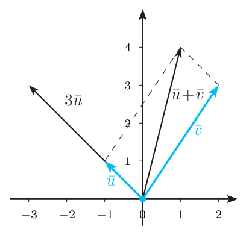
Figura de E p. 137: $\bar u$, $\bar v$, $\bar u+\bar v$ y $3\bar u$. E p.137
Receta: norma $=\sqrt{\text{suma de cuadrados}}$. Recuerda $\|\bar u+\bar v\|\le\|\bar u\|+\|\bar v\|$ (en general $<$) y $\|\lambda\bar u\|=|\lambda|\|\bar u\|$.
Errores típicos
(i) Creer $\|\bar u+\bar v\|=\|\bar u\|+\|\bar v\|$. (ii) $\|-3\bar u\|=-3\|\bar u\|$: es $|-3|\|\bar u\|=3\sqrt2$. (iii) $\sqrt{(-1)^2+1^2}=\sqrt{-1+1}$: el cuadrado de $-1$ es $+1$.
Bloque B · Conjuntos del plano: frontera, abierto y cerrado
★★ MedioMínimoEjercicio 4.5 · el disco $x^2+y^2\le4$: frontera, abierto o cerradoE pp.138-139
Dado $C=\{(x,y)\in\mathbb R^2:x^2+y^2\le4\}$: 1) representarlo; 2) determinar y representar su frontera; 3) razonar si es abierto o cerrado.
Ver solución paso a paso
Antes de calcular
Qué me piden
Dibujar el disco $x^2+y^2\le4$, hallar su frontera y decidir si es abierto o cerrado.
Cómo lo pienso
$C$ es el disco de radio $2$ con su borde. La frontera son los puntos en los que, por pequeño que sea el disco que se ponga alrededor, hay a la vez puntos de $C$ y de fuera: la circunferencia del borde. Como $C$ la contiene, es cerrado.
Qué uso
Disco, punto interior, frontera, conjunto abierto y cerrado (U pp.145-146); distancia al origen $=\sqrt{x^2+y^2}$ (U p.143) — ver teoría
Por dónde empiezo
Leo $x^2+y^2\le4$ como «distancia al origen $\le2$» y dibujo.
Apartado 1. $x^2+y^2=d\big((0,0),(x,y)\big)^2$, así que $x^2+y^2\le4$ significa «distancia al origen $\le2$»: el disco cerrado de centro $(0,0)$ y radio $2$, relleno y con borde continuo.
Apartado 2 (los pasos 2-4 son la justificación analítica). Cada punto de la circunferencia $S=\{x^2+y^2=4\}$ es frontera.Ejemplo: $P=(2,0)$ y un disco de radio $0{,}1$ centrado en él contiene a $P\in C$ ($4\le4$) y a $(2{,}05;0)$, que no es de $C$ ($4{,}2025>4$). En general: si $\|P\|=2$ y el disco tiene radio $r$, el punto $Q=(1+\tfrac r4)P$ está a distancia $\tfrac r4\cdot2=\tfrac r2<r$ de $P$ y cumple $\|Q\|=2+\tfrac r2>2$, o sea $Q\notin C$. Así todo disco centrado en $P$ tiene puntos de $C$ ($P$) y de fuera ($Q$).
Un punto de dentro no es frontera.Ejemplo: $P''=(1,0)$ y disco de radio $1$: si $Q$ dista menos de $1$ de $(1,0)$ entonces $\|Q\|<1+1=2$, luego $Q\in C$. En general: sea $s=\|P''\|<2$ y toma el disco de radio $\delta=2-s$. Si $Q$ está en él, $\|Q-P''\|<2-s$ y, por la desigualdad triangular, $\|Q\|\le\|P''\|+\|Q-P''\|<s+(2-s)=2$, luego $Q\in C$. Todo el disco está en $C$: es punto interior.
Un punto de fuera no es frontera.Ejemplo: $P'=(3,0)$ y disco de radio $1$: si $\|Q-P'\|<1$ entonces $\|Q\|\ge\|P'\|-\|P'-Q\|>3-1=2$, luego $Q\notin C$. En general: con $s=\|P'\|>2$ y $\delta=s-2$: si $\|Q-P'\|<\delta$, entonces $\|Q\|\ge\|P'\|-\|P'-Q\|>s-(s-2)=2$, así que $Q\notin C$. El disco no tiene puntos de $C$.
Frontera $=S=\{x^2+y^2=4\}$ (por ejemplo $(2,0)$ y $(\sqrt2,\sqrt2)$). Se dibuja solo la circunferencia.
Apartado 3. $C$ es cerrado porque contiene a su frontera: todos los puntos de $S$ cumplen $x^2+y^2=4\le4$. No es abierto: $(2,0)\in C$ no es interior (todo disco centrado en él se sale de $C$).
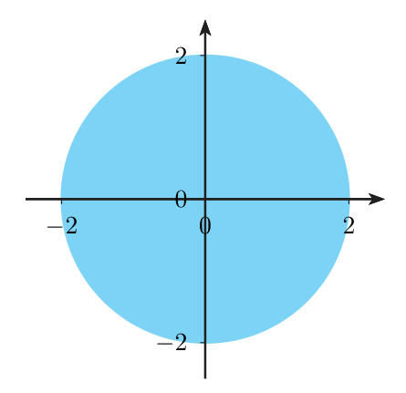
Apartado 1 (figura de E p. 138): el disco cerrado $x^2+y^2\le4$. E p.138
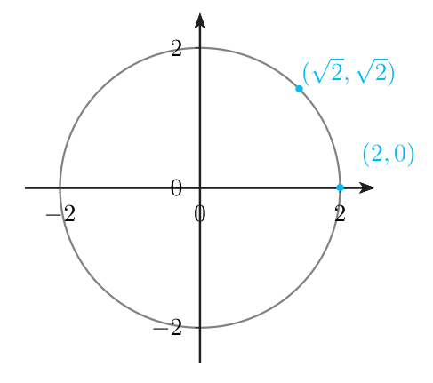
Apartado 2 (figura de E p. 138): la frontera es la circunferencia; $(\sqrt2,\sqrt2)$ y $(2,0)$ están en ella. E p.138
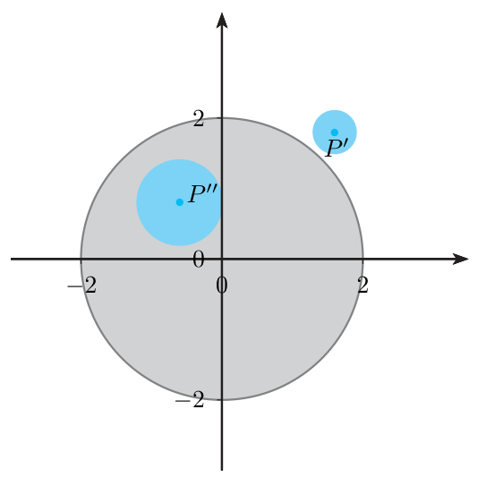
Figura de E p. 139: $P''$ dentro de $C$ (con un disco que cabe dentro) y $P'$ fuera de $C$ (con un disco que no corta a $C$): ninguno es frontera. E p.139
Receta: lee la desigualdad como disco (truco del apartado 3), frontera = distancia igual al radio, y mira si el borde pertenece ($\le$: cerrado; $<$: abierto).
Error típico
Dibujar el disco con borde discontinuo: eso indica que el borde no está incluido (y aquí sí lo está).
Bloque C · Polares, cilíndricas y esféricas
★★ MedioMínimoEjercicio 4.6 · polares de $(-1,1)$ y ángulo entre $\bar u$ y $\bar v$E p.140
Dados $\bar u=(-1,1)$ y $\bar v=(2,3)$: 1) expresar $\bar u$ en coordenadas polares; 2) determinar el ángulo que forman $\bar u$ y $\bar v$.
Ver solución paso a paso
Antes de calcular
Qué me piden
Pasar $(-1,1)$ a coordenadas polares y hallar el ángulo entre $\bar u$ y $\bar v$.
Cómo lo pienso
Polares = «a qué distancia del origen y con qué ángulo respecto del eje $x$»; el ángulo hay que elegirlo según el cuadrante en que cae el punto. El ángulo entre dos vectores sale de cuánto «se parecen» en dirección, que mide el producto escalar.
Qué uso
Polares (U §4.1.3, p.148); ángulo entre vectores $\cos\alpha=\frac{\bar x\cdot\bar y}{\|\bar x\|\|\bar y\|}$ (U Def. 4.2, p.147) — ver teoría
Por dónde empiezo
Calculo $\rho=\sqrt{x^2+y^2}$ y miro los signos de $x$ e $y$ para saber el cuadrante.
Radio: $\rho=\sqrt{(-1)^2+1^2}=\sqrt2$.
Tangente: $\operatorname{tg}\theta=1/(-1)=-1$.
Cuadrante: $x=-1<0$, $y=1>0$: segundo cuadrante.
Ángulo: en $[0,2\pi)$ hay dos con tangente $-1$: $3\pi/4$ (II) y $7\pi/4$ (IV). Como estamos en el II, $\theta=3\pi/4$ (tabla: $\pi-\theta_0$, con $\theta_0=\pi/4$).
Comprobación: $\sqrt2\cos\frac{3\pi}4=\sqrt2\cdot(-\frac{\sqrt2}2)=-1$ y $\sqrt2\operatorname{sen}\frac{3\pi}4=1$. ✓ Resultado: $(\rho,\theta)=(\sqrt2,3\pi/4)$.
$\cos\alpha=\dfrac1{\sqrt2\sqrt{13}}=\dfrac1{\sqrt{26}}\approx0{,}1961$, así que $\alpha=\arccos\frac1{\sqrt{26}}\approx1{,}3734$ rad $\approx78{,}69^\circ$. Aquí no hay que elegir cuadrante: $\arccos$ ya devuelve un valor en $[0,\pi]$ (U p.147). Como $\cos\alpha>0$, el ángulo es agudo.
Receta: polares: $\rho=\sqrt{x^2+y^2}$, $\theta$ por la tangente y el cuadrante (comprobar sustituyendo). Ángulo entre vectores: $\alpha=\arccos\frac{\bar u\cdot\bar v}{\|\bar u\|\|\bar v\|}$.
Errores típicos
(i) $\theta=\arctan(-1)=-\pi/4$: ni está en $[0,2\pi)$ ni en el cuadrante correcto. (ii) Confundir el ángulo polar de $\bar u$ ($3\pi/4$, con el eje $x$) con el ángulo entre $\bar u$ y $\bar v$.
★★ MedioEjercicio 4.7 · cilíndricas de $(1,1,1)$E p.140
Si las coordenadas cartesianas de un punto son $(1,1,1)$, ¿cuáles son sus coordenadas cilíndricas?
Ver solución paso a paso
Antes de calcular
Qué me piden
Dar las coordenadas cilíndricas de $(1,1,1)$.
Cómo lo pienso
Cilíndricas = polares del punto «visto desde arriba» $(x,y)$, más la altura $z$ sin tocar.
Qué uso
Cilíndricas (U §4.1.3, p.149): $\rho=\sqrt{x^2+y^2}$, $\operatorname{tg}\theta=y/x$, $z=z$ — ver teoría
Por dónde empiezo
Calculo $\rho$ con solo $x$ e $y$.
Fórmulas (U p.149): $\rho=\sqrt{x^2+y^2}$, $\operatorname{tg}\theta=y/x$ (con el cuadrante), $z=z$.
$\rho=\sqrt{1+1}=\sqrt2$.
$\operatorname{tg}\theta=1$ con $x>0$, $y>0$ (primer cuadrante): $\theta=\pi/4$.
Receta: de cartesianas a cilíndricas, trabaja solo con $(x,y)$ como en polares y copia $z$.
Error típico
Poner $\rho=\sqrt{x^2+y^2+z^2}=\sqrt3$: esa es la $\rho$ de las esféricas. En cilíndricas $\rho$ es la distancia al eje $z$.
★★ MedioMínimoEjercicio 4.8 · cambios entre cartesianas, cilíndricas y esféricasE p.141
1) Dado $(1,2,-1)$ en cartesianas, determinar sus coordenadas cilíndricas y esféricas. 2) Dado $(1,\pi,0)$ en cilíndricas, hallar sus cartesianas. 3) Dado $(1,\pi/2,0)$ en esféricas, hallar sus cartesianas.
Ver solución paso a paso
Antes de calcular
Qué me piden
Cambiar de coordenadas: cartesianas $\to$ cilíndricas y esféricas, y cilíndricas/esféricas $\to$ cartesianas.
Cómo lo pienso
Ir hacia cartesianas es solo sustituir en las fórmulas; salir de cartesianas exige elegir bien los ángulos ($\theta$ por el cuadrante, $\varphi$ por el signo de $z$).
Qué uso
Cilíndricas y esféricas (U §4.1.3, pp.149-151); en U, $z=\rho\operatorname{sen}\varphi$ con $\varphi\in[-\pi/2,\pi/2]$ — ver teoría
Por dónde empiezo
Empiezo por las cilíndricas de $(1,2,-1)$ (polares de $(1,2)$ y $z$ copiada); las esféricas reutilizan $\theta$.
Cilíndricas de $(1,2,-1)$. $\rho=\sqrt{1+4}=\sqrt5$; $\operatorname{tg}\theta=2$ con $x,y>0$ (primer cuadrante): $\theta=\arctan2\approx1{,}1071$; $z=-1$. Cilíndricas: $(\sqrt5,\arctan2,-1)\approx(2{,}2361;1{,}1071;-1)$.
Esféricas. $\rho=\sqrt{1+4+1}=\sqrt6$ (ahora es la distancia al origen). $\theta$ es el mismo que en cilíndricas: $\arctan2\approx1{,}1071$.
$\operatorname{sen}\varphi=z/\rho=-1/\sqrt6$; como $\varphi\in[-\pi/2,\pi/2]$, $\varphi=\operatorname{arcsen}(-1/\sqrt6)\approx-0{,}4205$ rad (negativo: el punto está por debajo del plano $xy$). Esféricas: $(\sqrt6,\arctan2,\operatorname{arcsen}(-1/\sqrt6))\approx(2{,}4495;1{,}1071;-0{,}4205)$.
Comprobación: $\cos\varphi=\sqrt{5/6}$, luego $\rho\cos\varphi=\sqrt5$, y $\sqrt5\cos\theta=1$, $\sqrt5\operatorname{sen}\theta=2$, $z=\sqrt6\cdot(-1/\sqrt6)=-1$. ✓
Apartado 3 (esféricas $(1,\pi/2,0)$): $x=\cos0\cos\frac\pi2=0$, $y=\cos0\operatorname{sen}\frac\pi2=1$, $z=\operatorname{sen}0=0$. Cartesianas: $(0,1,0)$ ($\varphi=0$: en el plano $xy$; $\theta=\pi/2$: semieje $y$ positivo).
Receta: cartesianas $\to$ cilíndricas/esféricas: $\theta$ con tangente + cuadrante; $\rho_{\text{cil}}=\sqrt{x^2+y^2}$, $\rho_{\text{esf}}=\sqrt{x^2+y^2+z^2}$; $\varphi=\operatorname{arcsen}(z/\rho)$. Al revés: sustituir.
Ejemplos propios (de fácil a difícil)
★ BásicoPropio 1 · producto escalar, norma, unitario, ángulo y desigualdad triangular en $\mathbb R^3$P
$\bar a=(1,2,2)$ y $\bar b=(2,-1,2)$. Calcula $\bar a\cdot\bar b$, las normas, un vector unitario en la dirección de $\bar a$, el ángulo y comprueba la desigualdad triangular.
Ver solución paso a paso
Antes de calcular
Qué me piden
Calcular producto escalar, normas, un vector unitario, el ángulo y comprobar la desigualdad triangular para dos vectores de $\mathbb R^3$.
Cómo lo pienso
Todo sale de dos ingredientes: el producto escalar (multiplicar y sumar) y la norma (raíz de la suma de cuadrados). Un unitario es el vector «reescalado» para que mida $1$.
Qué uso
U Def. 4.1 p.143 y Def. 4.2 p.147: producto escalar, norma, ángulo; desigualdad triangular — ver teoría
Por dónde empiezo
Calculo $\bar a\cdot\bar b$ y las dos normas.
$\bar a\cdot\bar b=2-2+4=4$.
$\|\bar a\|=\sqrt{1+4+4}=3$ y $\|\bar b\|=\sqrt{4+1+4}=3$.
Unitario: $\bar a/\|\bar a\|=(\tfrac13,\tfrac23,\tfrac23)$; su norma es $\sqrt{\tfrac19+\tfrac49+\tfrac49}=1$. ✓
$\cos\alpha=\tfrac4{9}$, $\alpha=\arccos\tfrac49\approx1{,}1102$ rad $\approx63{,}61^\circ$ (agudo, porque $\bar a\cdot\bar b>0$).
Receta: unitario = vector dividido por su norma. Signo de $\bar a\cdot\bar b$: $>0$ agudo, $=0$ recto, $<0$ obtuso.
Error típico
Dividir por la suma de componentes ($1+2+2=5$) en vez de por la norma.
★★ MedioPropio 2 · una corona: ni abierta ni cerradaP
$A=\{(x,y)\in\mathbb R^2:1<x^2+y^2\le4\}$. Descríbelo, halla su frontera y decide si es abierto, cerrado y acotado.
Ver solución paso a paso
Antes de calcular
Qué me piden
Describir la corona $1
Cómo lo pienso
Es el anillo entre la circunferencia de radio $1$ (excluida) y la de radio $2$ (incluida): un borde no le pertenece y el otro sí, así que ni contiene toda su frontera ni es todo interior.
Qué uso
Interior, frontera, abierto, cerrado, acotado (U pp.145-146); razonamiento de E 4.5 — ver teoría
Por dónde empiezo
Traduzco la condición a $1<\|(x,y)\|\le2$.
La condición es $1<\|(x,y)\|\le2$: corona circular, borde interior discontinuo y exterior continuo.
Frontera: las dos circunferencias $x^2+y^2=1$ y $x^2+y^2=4$ (mismo razonamiento que en E 4.5). Un punto con $1<\|P\|<2$ es interior: el disco de radio $\min(\|P\|-1,2-\|P\|)$ queda dentro. Ejemplo: $P=(1{,}5;0)$ con radio $0{,}5$.
Abierto: no. $(2,0)\in A$ es frontera, no interior.
Cerrado: no. $(1,0)$ es frontera y no está en $A$ (no cumple $1<1$).
Acotado: sí, cabe en el disco de centro $(0,0)$ y radio $3$.
Receta: cada desigualdad aporta un trozo de frontera; «$<$» lo deja fuera, «$\le$» lo mete. Si hay de las dos clases, no es ni abierto ni cerrado.
Error típico
Concluir «no es abierto, luego es cerrado».
★★★ DifícilPropio 3 · reconocer una bola en $\mathbb R^3$ completando cuadradosP
$B=\{(x,y,z):x^2+y^2+z^2-2z<3\}$. Demuestra que es una bola abierta (centro y radio) y clasifica $(0,0,0)$, $(1,1,1)$, $(0,0,3)$, $(2,0,1)$ y $(0,0,5)$ en interiores, frontera o exteriores.
Ver solución paso a paso
Antes de calcular
Qué me piden
Ver que $x^2+y^2+z^2-2z<3$ es una bola abierta (centro y radio) y clasificar cinco puntos.
Cómo lo pienso
Una bola es «los puntos a distancia menor que $r$ del centro». La desigualdad dada no lo parece, pero completando el cuadrado en $z$ aparece exactamente esa forma.
Qué uso
Bola abierta y frontera (U pp.145-147); completar cuadrados — ver teoría
Por dónde empiezo
Completo el cuadrado en $z$: $z^2-2z=(z-1)^2-1$.
$z^2-2z=(z-1)^2-1$, luego la condición es $x^2+y^2+(z-1)^2<4$, es decir $d\big((x,y,z),(0,0,1)\big)<2$: bola abierta de centro $(0,0,1)$ y radio $2$. Es abierta y acotada.
Frontera: la esfera $x^2+y^2+(z-1)^2=4$.
Con $g=x^2+y^2+z^2-2z$ (interior si $g<3$, frontera si $g=3$, exterior si $g>3$): $(0,0,0)$: $g=0$, interior. $(1,1,1)$: $g=1$, interior. $(0,0,3)$: $g=3$, frontera (y no pertenece a $B$). $(2,0,1)$: $g=3$, frontera. $(0,0,5)$: $g=15$, exterior.
Receta: completa cuadrados: $z^2-2kz=(z-k)^2-k^2$. Luego lee centro y radio de $\|\bar x-\bar c\|<r$.
Error típico
Olvidar el $-1$ al completar el cuadrado y obtener radio $\sqrt3$.
★★ MedioPropio 4 · conversiones con el cuadrante «trampa»P
a) Pasa a polares $(-1,-\sqrt3)$ y $(0,-3)$. b) Pasa $(-\sqrt3,-1,2)$ a cilíndricas y esféricas y comprueba volviendo a cartesianas. c) Escribe en cilíndricas el cilindro $x^2+y^2=9$ y en esféricas la esfera $x^2+y^2+z^2=4$.
Ver solución paso a paso
Antes de calcular
Qué me piden
Pasar puntos a polares, cilíndricas y esféricas (con cuadrantes difíciles) y escribir un cilindro y una esfera en esas coordenadas.
Cómo lo pienso
La calculadora no sabe en qué cuadrante estás: hay que decírselo con los signos de $x$ e $y$. Las superficies salen de sustituir las fórmulas de cambio.
Qué uso
Polares, cilíndricas y esféricas (U §4.1.3, pp.148-151); $\cos^2+\operatorname{sen}^2=1$ — ver teoría
Por dónde empiezo
En a) calculo $\rho$ y el ángulo de referencia con la tangente, y ajusto al cuadrante.
a) $(-1,-\sqrt3)$: $\rho=2$, $\operatorname{tg}\theta=\sqrt3$. La calculadora da $\pi/3$, pero $x<0,y<0$ es el tercer cuadrante: $\theta=\pi+\pi/3=4\pi/3$. Comprobación: $2\cos\frac{4\pi}3=-1$, $2\operatorname{sen}\frac{4\pi}3=-\sqrt3$. ✓ Polares $(2,4\pi/3)$.
$(0,-3)$: $x=0$, no se puede dividir; por la regla de U (p. 148), $y<0$ da $\theta=3\pi/2$, $\rho=3$. Polares $(3,3\pi/2)$.
b) Cilíndricas: $\rho=\sqrt{3+1}=2$, $\operatorname{tg}\theta=\frac1{\sqrt3}$ con $\theta_0=\pi/6$; tercer cuadrante: $\theta=7\pi/6$; $z=2$. Cilíndricas $(2,7\pi/6,2)$.
Esféricas: $\rho=\sqrt{3+1+4}=2\sqrt2$, $\theta=7\pi/6$, $\operatorname{sen}\varphi=\frac2{2\sqrt2}=\frac{\sqrt2}2$, luego $\varphi=\pi/4$. Esféricas $(2\sqrt2,7\pi/6,\pi/4)$.
c) $x^2+y^2=\rho^2\cos^2\theta+\rho^2\operatorname{sen}^2\theta=\rho^2$: el cilindro es $\rho=3$ ($\theta$ y $z$ libres). Y $x^2+y^2+z^2=\rho^2\cos^2\varphi+\rho^2\operatorname{sen}^2\varphi=\rho^2$: la esfera es $\rho=2$.
Receta: $\theta$: tangente, ángulo de referencia $\theta_0$, ajustar por cuadrante y comprobar sustituyendo. Superficies: sustituir y simplificar con $\cos^2+\operatorname{sen}^2=1$.
Error típico
Dar $\theta=\pi/3$ para $(-1,-\sqrt3)$: ese ángulo corresponde a $(1,\sqrt3)$, el punto opuesto.
9Así lo preguntan en el examen X
Qué cae en el examen de este tema
En los exámenes resueltos hay 7 preguntas de este tema (todas se resuelven aquí abajo con su redacción) y 8 ejercicios en el libro E. Son preguntas cortas de 1 punto que se reparten en 4 tipos:
Tipo de pregunta
Receta en una línea
Libro E
Examen
Producto escalar y normas (2 de 7)
Multiplicar y sumar; raíz de la suma de cuadrados, también en $\mathbb R^4$.
Recuento propio sobre las preguntas de X resueltas aquí (Examen 6 cuenta en dos tipos). Los conjuntos abiertos, cerrados y la frontera (E 4.5) no se preguntan sueltos en X: reaparecen como paso intermedio al justificar extremos absolutos en temas posteriores.
P
Estos 7 problemas de X solo necesitan este tema. Tipos de pregunta que no se cubren aquí: las demás preguntas con polares (X pp.47, 57, 65, 143) pertenecen a §4.2-4.4 y se verán más adelante. Cada solución empieza por la caja ✍️ con lo que hay que escribir a mano; los comentarios, desplegables.
★ BásicoX1 · ortogonalidad de $(0,1,2)$ y $(-3,-4,2)$X p.1 (feb. 2010)
¿Son ortogonales los vectores $(0,1,2)$ y $(-3,-4,2)$? Justifíquese la respuesta.
Ver solución paso a paso
Antes de calcular
Qué me piden
Decidir (y justificar) si $(0,1,2)$ y $(-3,-4,2)$ son ortogonales.
Cómo lo pienso
Ortogonal significa perpendicular; en coordenadas se comprueba con el producto escalar, que debe valer cero.
Qué uso
Ortogonalidad $\iff\bar x\cdot\bar y=0$ (U Def. 4.2, p.147); producto escalar (U Def. 4.1, p.143) — ver teoría
Como el producto escalar $=0$, los vectores son ortogonales (Def. 4.2, U p.147).
Receta: ortogonales $\iff\bar u\cdot\bar v=0$: multiplica componente a componente, suma y comprueba si da $0$.
Comentarios y comprobaciones
Es el mismo ejercicio que E 4.3, resuelto arriba con todos los pasos. «Justificar» es nombrar el criterio: ortogonales $\iff\bar x\cdot\bar y=0$ (Def. 4.2).
★★ MedioMínimoX2 · teoría de las coordenadas polaresX p.13 (feb. 2011)
Describa brevemente las coordenadas polares en $\mathbb R^2$. Indique también cómo se cambia de coordenadas polares a cartesianas y viceversa.
Ver solución paso a paso
Antes de calcular
Qué me piden
Describir las coordenadas polares y dar el cambio polares $\leftrightarrow$ cartesianas.
Cómo lo pienso
En vez de «cuánto a la derecha y cuánto arriba» $(x,y)$, se dice «a qué distancia del origen y en qué dirección» $(\rho,\theta)$. Es una pregunta de teoría: hay que decir qué son $\rho$ y $\theta$, dar las dos fórmulas y avisar del cuadrante.
Defino $\rho$ y $\theta$ con sus rangos y escribo las fórmulas en ambos sentidos.
✍️ Así se redacta en el examen
Descripción. Todo punto $(x,y)\ne(0,0)$ queda determinado de forma única por un radio $\rho>0$ y un ángulo $\theta\in[0,2\pi)$: $\rho=\|(x,y)\|$ es la distancia al origen y $\theta$ el ángulo que forma el vector $(x,y)$ con el semieje $x$ positivo, medido en sentido antihorario.
Polares a cartesianas: $x=\rho\cos\theta$, $y=\rho\operatorname{sen}\theta$.
Cartesianas a polares: $\rho=\sqrt{x^2+y^2}$; $\operatorname{tg}\theta=y/x$ si $x\ne0$, eligiendo de los dos ángulos de $[0,2\pi)$ con esa tangente el del cuadrante que indican los signos de $x$ e $y$; si $x=0$, $\theta=\pi/2$ ($y>0$) o $3\pi/2$ ($y<0$).
Receta: pregunta de teoría = definición (qué son $\rho$ y $\theta$ y sus rangos) + las dos fórmulas + el aviso del cuadrante + un ejemplo.
Comentarios y comprobaciones
Error típico
Dar $\theta=\arctan(y/x)$ sin más (falla en los cuadrantes II, III y IV y para $x=0$), u olvidar que el origen no tiene ángulo definido.
★ BásicoMínimoX3 · producto escalar y normas en $\mathbb R^4$X pp.22-23 (feb. 2012)
Calcule el producto escalar de $(1,2,3,4)$ y $(-1,-2,-3,-4)$ y la norma de estos dos vectores.
Ver solución paso a paso
Antes de calcular
Qué me piden
Calcular el producto escalar de dos vectores de $\mathbb R^4$ y la norma de cada uno.
Cómo lo pienso
Las fórmulas de $\mathbb R^2$ y $\mathbb R^3$ valen igual en $\mathbb R^4$: solo hay más sumandos. Un producto escalar puede ser negativo; una norma, nunca.
Receta y error típico: como X4; además $\sqrt{27}=\sqrt{9\cdot3}=3\sqrt3$.
Comentarios y comprobaciones
Diferencia: $(4,2,0)-(1,-1,3)=(3,3,-3)$.
$d=\sqrt{9+9+9}=\sqrt{27}=3\sqrt3\approx5{,}196$.
★★ MedioMínimoX6 · distancia y ánguloX p.89 (feb. 2018)
Calcule la distancia entre los puntos $(1,0,-1)$ y $(2,0,-1)$ con la métrica euclídea. Determine el ángulo que forman los vectores $(0,1,2)$ y $(1,-1,1)$.
Ver solución paso a paso
Antes de calcular
Qué me piden
Hallar una distancia en $\mathbb R^3$ y el ángulo entre dos vectores.
Cómo lo pienso
Dos cuentas independientes: la distancia es la norma de una resta; el ángulo sale del coseno, que es el producto escalar dividido entre el producto de las normas.
Qué uso
Distancia (U p.143); ángulo $\cos\alpha=\frac{\bar x\cdot\bar y}{\|\bar x\|\|\bar y\|}$ (U Def. 4.2, p.147) — ver teoría
Por dónde empiezo
Resto los dos puntos para la distancia; luego calculo el producto escalar y las normas.
✍️ Así se redacta en el examen
$d=\|(1,0,-1)-(2,0,-1)\|=1$. $\cos\alpha=\dfrac{(0,1,2)\cdot(1,-1,1)}{\sqrt5\sqrt3}=\dfrac1{\sqrt{15}}$, luego $\alpha=\arccos\frac1{\sqrt{15}}\approx1{,}3096$ rad.
Receta: $\cos\alpha=\frac{\bar u\cdot\bar v}{\|\bar u\|\|\bar v\|}$ y $\alpha=\arccos(\dots)\in[0,\pi]$, en radianes; comprueba calculando el coseno del resultado.
Comentarios y comprobaciones
Distancia: $(1,0,-1)-(2,0,-1)=(-1,0,0)$, $d=1$ (solo difieren en una unidad en $x$).
Sé calcular un producto escalar, una norma y una distancia en $\mathbb R^2$, $\mathbb R^3$ y $\mathbb R^4$ sin fallar signos.
Sé decidir si dos vectores son ortogonales y calcular el ángulo entre dos vectores (en radianes).
Sé qué operaciones tienen sentido (vector·vector $\to$ número; número·vector $\to$ vector) y por qué no hay producto escalar de tres vectores ni entre $\mathbb R^2$ y $\mathbb R^3$.
Sé usar $\|\lambda\bar u\|=|\lambda|\|\bar u\|$ y la desigualdad triangular, y sé que la igualdad en la triangular es excepcional.
Sé leer una desigualdad $(x-a)^2+(y-b)^2\ \square\ r^2$ como un disco, hallar su frontera y decir si es abierto, cerrado o ninguno de los dos.
Sé pasar de cartesianas a polares eligiendo $\theta$ por el cuadrante, y comprobar sustituyendo.
Sé convertir entre cartesianas, cilíndricas y esféricas en los dos sentidos, con la convención de U ($\varphi$ desde el plano $xy$).
Sé responder la pregunta de teoría de polares (X 2011) con definición, fórmulas, aviso del cuadrante y ejemplo.